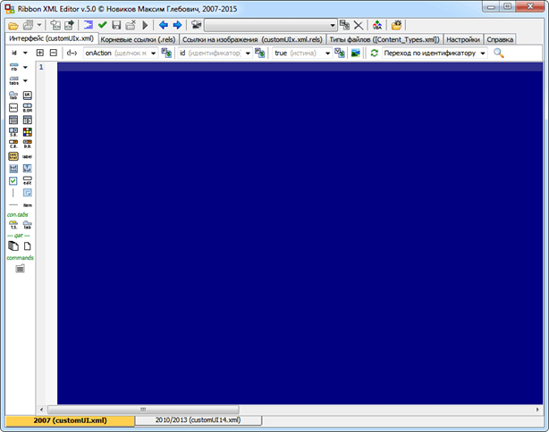
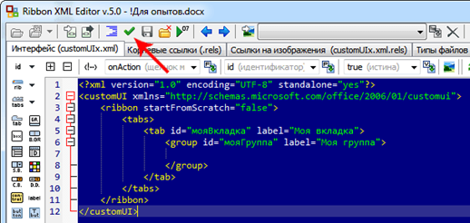
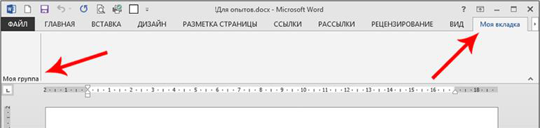
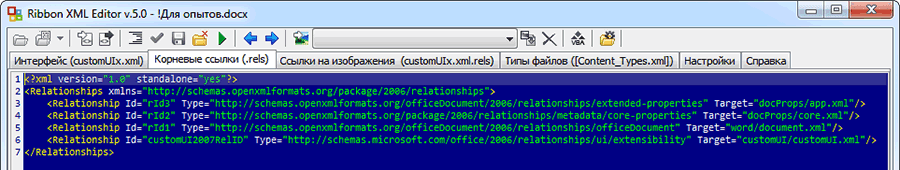
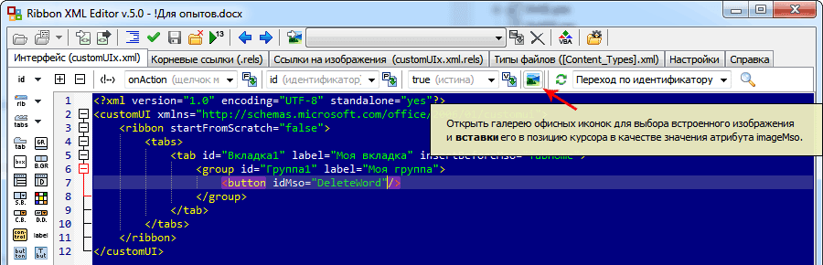
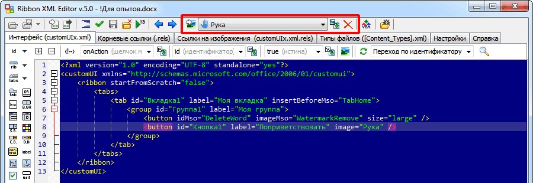
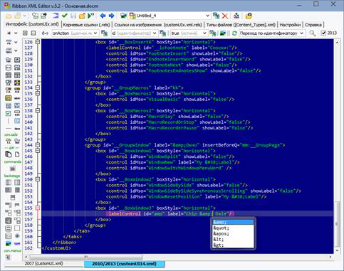
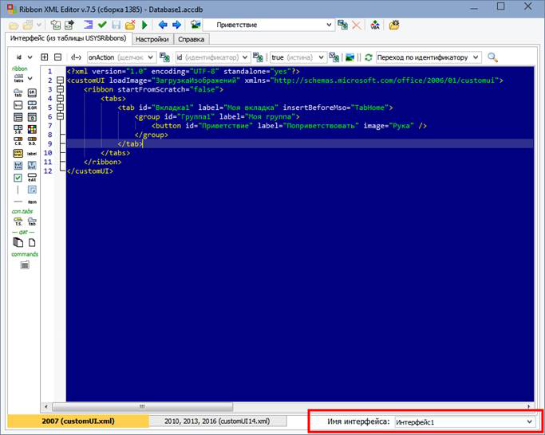

Уроки по модификации пользовательского ленточного интерфейса "Microsoft Fluent UI" для приложений Word, Excel, PowerPoint и Access.
Оглавление
Настройка пользовательского интерфейса приложений Microsoft Office. 1
Вступление. 2
Урок 1. Эксперимент по редактированию Fluent UI. 3
Урок 2. Как это работает. Структура документа. 7
Урок 3. Атрибуты id, idMso и idQ и пространство имён. 9
Урок 4. Ещё несколько полезных атрибутов. 11
Урок 5. Работа со встроенными изображениями.. 12
Урок 6. Работа с внешними изображениями.. 14
Урок 7. Надписи и всплывающие подсказки. Пример стандартного меню. 17
Урок 8. Динамические атрибуты. 18
Урок 9. Выполнение действия по нажатию кнопки. 21
Урок 10. Создание простейшей надстройки. 22
Урок 11. Создание второй надстройки, дополняющей первую. 25
Урок 12. Динамическое меню. 28
Урок 13. Амперсанд (&), его код & и подчёркивание быстрых клавиш.. 30
Урок 14. Автоматическое открытие заданной вкладки ленты при запуске документа. 31
Урок 15. Использование Ribbon XML Editor для создания ленты в Access (устарело, см. ур. 17). 32
Урок 16. Использование внешних изображений на ленте Access (устарело, см. ур. 17). 34
Урок 17. Использование внешних изображений на ленте Access в версии RXE 7.5. 46
Урок 18. Размещение на своей вкладке уже имеющейся в приложении кнопки.. 51
Вступление
На страницах этого блога я буду вести уроки по модификации пользовательского ленточного интерфейса "Microsoft Fluent UI" для приложений Word, Excel и PowerPoint.
Уроки – вещь длинная и нудная, поэтому для всех тех, кто схватывает на лету, достаточно двух строчек:
1. Скачиваем редактор интерфейса Ribbon XML Editor отсюда: http://novikov.gq/products/ribbonxmleditor/ribbonxmleditor.html, распаковываем, запускаем.
2. Открываем в нём документ, вставляем в окно xml-кода интерфейса текст, скопированный отсюда: http://novikovmaxim.narod.ru/statyi/ur_progr/word2007/word07_3.htm, нажимаем F9.
Собственно, всё. Изучаем код, модифицируем его под свои нужды, тестируем. Для тех же, кто хочет освоить настройку интерфейса в более полном объёме, и предназначены дальнейшие уроки.
Пожалуйста, оставляйте свои вопросы, советы и рекомендации по теме построения интерфейса в комментариях. Постараюсь ответить на все ваши вопросы. Наиболее частые из них найдут отражение в будущих уроках. Также буду рад сторонним ответам на вопросы новичков. Любая помощь и обсуждение приветствуется.
Урок 1. Эксперимент по редактированию Fluent UI.
Чтобы не перенапрягать читателя нудной теорией, мы в первом же уроке проведём практический эксперимент по модификации ленточного пользовательского интерфейса приложений Microsoft Office на примере Word, как наиболее распространённого приложения пакета. Замечу, что принципиальных отличий от Excel и PowerPoint в области модификации интерфейса у Word нет, поэтому всё, что справедливо для Word, можно применять и к другим приложениям.
Текста для чтения на этом уроке будет много, но фактических действий — всего ничего. Несколько раз щёлкнуть мышкой, так что не пугайтесь. Весь остальной текст — всего лишь дополнительная информация для тех, кто вообще не в курсе темы.
В отличие от 2007-й версии офиса, в более современных версиях (2010 и 2013) уже кое-что можно сделать и собственными настройками ленты. Впрочем, далеко не всё. Поэтому этот вариант настройки мы рассматривать не будем — в нём и так всё предельно понятно, потому что он специально сделан для широких пользовательских масс. Остановимся на другом, низкоуровневом варианте модификации, где нам потребуется построить некоторые описательные конструкции на языке разметки XML, но зато нас не будут ограничивать рамки конкретной реализации настроек офиса.
Небольшое отступление о том, какие преимущества даёт нам разработка интерфейса на XML. Одним из таковых является то, что описание интерфейса внедряется не в приложение, а в документ или шаблон, и поэтому может распространяться вместе с ним. Кроме того, для добавляемых пользовательских элементов посредством процедур обратного вызова можно динамически определять атрибуты, чего нельзя сделать через обычные настройки. На вкладке можно разместить не только уже существующие элементы или кнопки запуска макросов, но и элементы, подобные существующим, но наделённые своим функционалом. Также, можно группировать элементы при помощи элемента box, да и, пожалуй, много чего ещё, чего функционал стандартных настроек не позволяет.
Итак, как я уже сказал выше, для построения своего интерфейса нам нужно его куда-то внедрять — в шаблон или документ. Думаю, проще всего нам создать для опытов обычный документ Word. Откроем Word и сохраним созданный подопытный документ на диск под любым удобным для вас именем, как «Документ Word (*.docx)». Замечу, что для нашей цели нельзя создавать документ через контекстное меню проводника, потому что таким способом создастся просто пустой файл с названием и правильным расширением, но без внутренней структуры, и нам тогда некуда будет внедрять свой интерфейс.
Сейчас файл для опытов создан, и теперь настало время выбрать инструмент, который позволил бы нам построить и внедрить в созданный документ наш интерфейс. Сегодня в Интернете можно найти множество различных редакторов, делающих это, начиная с примитивной утилиты Custom UI Editor for Microsoft Office, и заканчивая пакетом Microsoft Visual Studio от того же разработчика. Существуют даже варианты в виде надстроек, реализующие тот же функционал. Но всё это либо неудобно, либо слишком сложно, либо не поддерживает русский язык, либо откровенно глючит, не говоря уже о том, что многое из этого платно.
Среди всего этого многообразия наиболее удобным, на мой взгляд, является специализированный XML-редактор Ribbon XML Editоr (известный ещё как RibbonXMLEditor или RXE) отечественного разработчика. Этот редактор появился ещё на заре зарождения ленточного интерфейса, в далёком 2007 году, и до сих пор поддерживается и развивается. Это не какая-нибудь там надстройка, а полноценная программа, рассчитанная на ускоренное написание нужных нам XML-конструкций. Плюс ко всему прочему — редактор этот абсолютно бесплатный. Ещё один плюс — он не требует установки, а просто распаковывается из архива, и сразу же можно пользоваться.
Итак, скачиваем редактор с официального сайта (чтобы гарантированно получить последнюю версию), распаковываем, например, в «C:\Program Files» или «C:\Program Files (x86)» (в 64-битных системах), и запускаем:

Снизу рыжая вкладка означает, что выбрано создание интерфейса версии 2007-го офиса. Рядом расположена другая вкладка — для интерфейса 2010 или 2013 офиса. На этом следует остановиться подробнее. Нам надо понять, какую версию интерфейса мы будем разрабатывать.
Если мы хотим сделать наш документ совместимым со всеми версиями, начиная с 2007-й, то оставляем первую вкладку. Если мы хотим использовать дополнительные возможности по конфигурированию (например, сконфигурировать закулисное пространство, находящееся под ярлыком «Файл»), то переключаемся на вторую вкладку. Если мы хотим использовать в версии 2007 один интерфейс, а в версии 2010 или 2013 — другой, то нам надо будет прописать эти интерфейсы на обеих вкладках.
Для нашего эксперимента мы воспользуемся первой вкладкой, то есть сделаем наши изменения интерфейса доступными для всех версий офисного пакета, начиная с 2007. Итак, начнём работу.
Для начала открываем в редакторе созданный в Word’е документ. Для этого просто нажимаем Ctrl+O и выбираем в открывшемся окне нужный файл. Если вы привыкли работать мышкой, можно нажать на кнопку с папочкой в верхнем левом углу программы. Замечу, что все кнопки в редакторе снабжены подробными всплывающими подсказками, что очень удобно, особенно для новичков. На кнопке с папочкой как раз и всплывёт подсказка «Открыть документ», и будет указана комбинация клавиш для этого же действия с клавиатуры.
После открытия документа его имя появится в шапке программы. Если документ новый, и до нас никто ничего в него не внедрял, то окно редактора останется пустым. В нём мы и будем писать наш XML-код, описывающий интерфейс.
Как вы, наверное, уже могли заметить в процессе пользования ленточным интерфейсом, элементы в нём располагаются иерархически. На ленте расположены вкладки, на вкладках — группы, в группах — кнопки и другие элементы. При этом нельзя кнопку или другой элемент поместить сразу на вкладку, вне группы. Чтобы представлять себе разрешённую иерархию элементов в целом, можно нажать F1, и в открывшейся справке выбрать ссылку «Лента (ribbon) — схема интерфейса». Теперь, последовательно нажимая одну и ту же клавишу F1, можно переходить от схемы к коду и обратно.
На схеме видно, что корнем иерархии ленты является элемент ribbon (собственно, лента). Внутри ленты помещается четыре вложенных элемента. Из них нас будет интересовать сегодня только элемент tabs (вкладки). Вкладки, как понятно из названия, содержат в себе, собственно, одиночные вкладки — tab. Каждая вкладка содержит в себе группу элементов (group), которая, в свою очередь, может содержать большое количество разных других элементов, которые я перечислять не буду — все они видны на схеме.
Итак, начинаем конструирование. Добавляем в область текста корневой элемент ribbon. Для этого нажимаем кнопку с выбором действия с надписью «rib» вверху левой панели, но действие для кнопки не выбираем, оставляем по умолчанию:
Для интересующихся другими возможными действиями этой кнопки советую почитать всплывающую подсказку, из которой становится понятно, что кроме элемента ленты кнопка позволяет вставлять элемент commands (команды), который мы пока не рассматриваем:
После нажатия кнопки «ribbon» в области текста тотчас же появится следующая конструкция:
|
<?xml version="1.0" encoding="UTF-8" standalone="yes"?> <customUI xmlns="http://schemas.microsoft.com/office/2006/01/customui"> <ribbon startFromScratch="false"> │ </ribbon> </customUI> |
Давайте кратко пробежимся по ней. Первая строчка нас мало интересует, она присутствует для соответствия XML-кода общему стандарту, и её мы рассмотрим как-нибудь потом. Далее мы видим тег customUI внутри которого вставлен тег ribbon выбранного нами элемента. Таким образом, получается, что элемент ленты на самом деле не является корневым, а находится внутри действительно корневого элемента — customUI (настраиваемый пользовательский интерфейс).
Корневой элемент customUI помимо ленты может включать в себя уже упомянутый элемент «команды», а в версиях, начиная с 2010, «контекстные меню» и «закулисье», находящееся под ярлыком «Файл». Но не будем отвлекаться, и ограничимся пока лентой.
Следующим этапом, согласно схеме (F1), в элемент ribbon нужно вставить элемент tabs, и соответствующую кнопку мы как раз видим чуть ниже. Но мы пойдём ещё более простым путём. Чтобы каждый раз не лазить в схему, и не смотреть, что во что вложено, мы просто нажимаем комбинацию клавиш Ctrl+Пробел, т.е. принудительно вызываем автодополнение. После нажатия этого сочетания откроется список элементов, доступных внутри текущего элемента. Среди предложенных вариантов видим tabs. Выбираем его, и внутрь элемента ribbon вставляется элемент tabs, сразу же внутрь него — элемент tab, потому что других вариантов всё равно нет, а внутрь tab — group.
Мы выполнили совсем мало телодвижений, а уже почти создали нужную нам конструкцию. Нам осталось лишь заполнить значения атрибутов (прописать их внутри кавычек). В атрибуты id элементов впишем прямо по-русски, к примеру, «мояВкладка» и «мояГруппа» соответственно, а в атрибуты label — «Моя вкладка» и «Моя группа».
Замечу, что все идентификаторы поддерживают строки Unicode, то есть их можно писать и на латинице, и на кириллице, и ещё много на чём. Очень полезную информацию о типах строк можно получить из прекрасной справки Ribbon XML Editor, перейдя с главной её страницы по ссылке «Атрибуты, их типы и списки значений» и прокрутив на последние две таблицы. Проследив иерархию нужного строкового типа можно установить, какая именно строка допустима в строковом значении того или иного атрибута.
На этом модификацию интерфейса пока закончим, и попробуем посмотреть вживую, что у нас получилось. Сначала нужно проверить правильность нашей разметки интерфейса. Для этого нажимаем клавишу F7, и читаем результат проверки во всплывшем окне. Вместо клавиши F7 можно также нажать кнопку с зелёной галочкой в верхнем ряду кнопок программы:

Если результат проверки положителен, можно попробовать запустить документ на выполнение, чтобы убедиться, что наша модификация сработала. Для этого нажимаем клавишу F9 (или кнопку с зелёной стрелкой, расположенной через две кнопки правее от кнопки с галочкой). Откроется Word, и мы увидим, что в конец набора вкладок добавилась новая вкладка с присвоенным нами именем «Моя вкладка». Если мы её откроем, то увидим и вставленную нами в неё группу:

Во время открытия документа могут проявится ошибки, которые не определились или были проигнорированы на этапе валидации (F7) в Ribbon XML Editor. Чтобы Word нам сообщал о них, следует включить в нём галочку напротив пункта настроек: «Файл → Параметры → Дополнительно → Общие → Показывать ошибки интерфейса пользователя надстроек».
На этом сегодняшний урок мы закончим. Закрываем Word, затем закрываем Ribbon XML Editor. Если после запуска вы что-то меняли в тексте, последует вопрос о сохранении изменений. Подтверждаем изменения и закроем редактор.
Сегодня мы получили общее представление о модификации ленточного интерфейса. На следующем уроке мы чуть глубже погрузимся в структуру документа, и узнаем, как в нём хранится настраиваемый пользовательский интерфейс для приложения.
Урок 2. Как это работает. Структура документа.
На прошлом уроке мы написали новую вкладку и внедрили её в интерфейс документа, не останавливаясь подробно на самом механизме такого внедрения, чтобы не перегружать и так длинный урок. Сегодня я расскажу о том, как именно происходит внедрение написанных нами XML-конструкций в файл.
Файлы документов офисных приложений в версиях, начиная с 2007-й, кардинально отличаются от файлов документов предыдущих версий по формату хранения в них данных. Если раньше это был внутренний, закрытый формат, то теперь любой документ Word, Excel или PowerPoint представляет собой банальную структуру папок с информацией документа, сжатую алгоритмами ZIP, которую можно распаковать практически любым архиватором.
В этой структуре папок есть специальные папки для хранения текста, изображений, стилей и прочих составляющих, из которых состоит документ. Одной из таких папок является папка customUI, в которой и хранится XML-файл с написанным нами интерфейсом. Давайте в этом убедимся.
Откройте программу Ribbon XML Editor, и нажмите Shift+Ctrl+O, чтобы загрузить последний документ, созданный на прошлом уроке. Вместо клавиатурной комбинации можно нажать и на соответствующую кнопку в интерфейсе программы, расположенную в верхней панели с изображением открытой папки, из которой торчит листок с текстом. Это кнопка с выбором действия. По умолчанию она открывает последний документ, но, щёлкнув по стрелочке справа, можно открыть список всех файлов, открываемых в программе в последнее время. Пока в этом списке содержится только один документ, но их может быть сколько угодно. Максимальное количество запоминаемых документов можно изменить в настройках программы.
Когда программа открывает документ, фактически она распаковывает его к себе в техническую папку и считывает из неё файл с XML-макетом интерфейса. Давайте посмотрим, что из себя представляет наш распакованный документ. Для этого откроем техническую папку программы, нажав самую правую кнопку в верхней панели с изображением открытой папки, из которой торчит шестерёнка.
В открывшейся папке мы видим папку с распакованным документом, а рядом ещё два файла, содержащих настройки Ribbon XML Editor. Нас интересует папка с распакованным документом. Открыв её, мы, среди других папок, увидим папку customUI. Это папка настраиваемого пользовательского интерфейса. В документах, не имеющих внедрённого интерфейса, эта папка отсутствует.
Откроем эту папку, и увидим файл customUI.xml, содержащий набранный нами на прошлом уроке текст. Так что всё очень прозрачно и доступно. Но этим файлом модификация интерфейса не ограничивается. Приложению надо как-то дать знать, что интерфейс находится именно в этом файле, потому что теоретически название папки и файла с интерфейсом могут быть любыми. Для этого в корневой папке документа имеется папка _rels, содержащая файл .rels. В этом файле содержится список ссылок на различные компоненты документа, в том числе и на настраиваемый пользовательский интерфейс.
Содержимое файла корневых ссылок .rels можно увидеть непосредственно в редакторе Ribbon XML Editor, открыв вкладку с названием «Корневые ссылки (.rels)», ярлык которой расположен в верхней части программы, сразу под верхней панелью. Рассмотрим файл корневых ссылок подробнее. Перейдите в редактор, и откройте эту вкладку:

Корневые ссылки оформлены тоже в виде XML-конструкций. Каждая ссылка содержит идентификатор, тип и ссылку на файл, который она представляет. Интересующая нас ссылка является последней. Можно увидеть, что она указывает путь к нашему файлу интерфейса. При внедрении интерфейса в документ Ribbon XML Editor добавляет эту ссылку автоматически. Теоретически идентификатор ссылки (атрибут Id) может быть любым, но обычно используют именно этот (CustomUI2007RelID для версии 2007 и CustomUI2010RelID для версий 2010/2013).
Помимо ссылки на интерфейс, в файле содержатся ссылки на файлы основных данных по документу (принадлежность приложению, на каком шаблоне документ основан, количество символов в документе и др. статистическая информация), основных настроек документа (название, автор, кто редактировал, когда документ был создан и когда отредактирован и пр.), а также ссылка на собственно содержимое документа. Все эти данные также содержатся в виде XML-конструкций.
В структуре документа есть ещё пару мест, которые нас будут интересовать, когда мы начнём импортировать в интерфейс собственные иконки, и они отражаются на третьей и четвёртой вкладках редактора интерфейса. Замечу, что нам вряд ли когда-нибудь потребуется что-то менять на всех этих дополнительных вкладках программы. Все изменения там происходят автоматически по мере работы на первой вкладке, и существуют они больше в образовательных целях, чем для какой-то реальной работы.
На этом мы закончим сегодняшний урок. Закройте документ, нажав Ctrl+W, или щёлкнув по кнопке с изображением закрытой папки с красным крестиком. Папка документа исчезнет из технической папки программы, текстовые редакторы на всех вкладках очистятся, документ закроется. Закроем и окно программы, стандартным образом — щёлкнув по красному крестику в правом верхнем углу.
Небольшое дополнение по закрытию документа. Фактически, сам файл документа закрывается сразу же после его распаковки в техническую папку, и работа ведётся только с распакованной копией. При сохранении документа распакованная папка снова архивируется со всеми изменениями, и полученный документ просто перезаписывает основной документ. Это надо иметь ввиду, если вы редактируете документ в приложении офиса, когда он уже открыт в Ribbon XML Editor. В этом случае после сохранения документа из приложения с последующим его сохранением из Ribbon XML Editor данные, внесённые ранее через приложение, будут потеряны.
Для одновременного редактирования приложения в обеих программах надо не забывать закрывать его в Ribbon XML Editor перед открытием в офисном приложении, а при открытии в Ribbon XML Editor — закрывать его в MS Office. Для автоматизации этого рутинного процесса в Ribbon XML Editor есть специальные настройки «Закрывать документ перед запуском его в MS Office» и «Открывать документ при закрытии его в MS Office». Их можно найти на вкладке настроек в разделе «Документы». Впрочем, одновременное редактирование бывает полезно только при работе с написанием макросов, поэтому пока просто запомним эту возможность программы.
На следующе уроке мы продолжим начатую в первом уроке модификацию интерфейса и разберёмся с атрибутами id, idMso и idQ идентификаторов и пространствами имён.
Урок 3. Атрибуты id, idMso и idQ и пространство имён.
На первом уроке мы добавили свою вкладку со своей группой в интерфейс. Как вы, наверное, уже заметили, каждый элемент интерфейса формируется XML-структурой, которая состоит из открывающего и закрывающего тегов, атрибутов, присутствующих внутри открывающего тега, а также значений этих атрибутов, помещённых в кавычки. Имя тега — это имя элемента. Атрибуты — это параметры того или иного элемента.
Одним из важнейших параметров является идентификатор элемента, по которому приложение офиса отличает его от других элементов того же типа, находящихся рядом в том же родительском элементе-контейнере. Другими словами, он присутствует в любом элементе, если подразумевается возможность нахождения нескольких однотипных элементов на одном уровне иерархии. Так, например, элемент tabs не имеет идентификатора, поскольку внутри родительского элемента ribbon может быть только один элемент tabs. Других элементов tabs рядом быть не может. А вот элемент tab обязан иметь идентификатор, поскольку внутри tabs этих элементов может быть много, и их надо как-то различать.
Когда мы вставляем в интерфейс какой-либо элемент, вместе с формирующими элемент тегами в него вставляются некие обязательные атрибуты. При вставке tabs были вставлены только теги, обязательных атрибутов у этого элемента нет. А вот у tab обязательно должен быть идентификатор, поэтому внутри открывающего тега мы видим атрибут id, который как раз и задаёт этот идентификатор. Кроме того, странно было бы видеть вкладку без названия (её тогда даже не будет видно, если она не является текущей), поэтому в тег по умолчанию включён также атрибут label, который, хотя и не является обязательным, но практически всегда используется.
Атрибут id позволяет задать пользовательский идентификатор созданного элемента. Но наряду с элементами, созданными пользователем, существуют и штатные элементы, уже присутствующие в приложении. Это имеющиеся в нём изначально вкладки, группы, кнопки и т.д. Если мы захотим вставить в нашу вкладку уже готовую штатную группу, то вместо id мы пишем idMso (атрибут, задающий штатный идентификатор Microsoft Office) и вставляем в его значение идентификатор того элемента, который хотим видеть. Таким образом, id задаёт идентификатор для созданных пользователем элементов, а idMso — идентификатор уже существующего, штатного элемента офиса.
Проверим это на практике, вставив на нашу вкладку вместо нашей группы другую, уже существующую в Word’е. Для этого откроем в Ribbon XML Editor наш последний документ, установим курсор в любое место атрибута id созданной нами группы и нажмём Ctrl+Пробел. Выберем в появившемся списке атрибут idMso. Атрибут id поменяется на атрибут idMso. Теперь поставим курсор внутрь кавычек перед нашим идентификатором, и снова нажмём Ctrl+Пробел. Откроется список идентификаторов существующих групп. Выберем идентификатор GroupFont. Теперь запустим документ, и если у вас было включено отображение ошибок интерфейса (Файл - Параметры - Дополнительно - Общие - Показывать ошибки интерфейса пользователя надстроек), Word выдаст ошибку по поводу того, что не может изменить label существующей группы. Закрыв окно ошибки, мы увидим, что вместо нашей группы в нашей вкладке появилась существующая в Word’е группа «Шрифт», а наш атрибут label не применился. Так же были бы обруганы и все другие созданные нами элементы, если бы мы попытались вставить их внутрь этой группы. Отметим на будущее, что готовые штатные группы не поддаются модификации.
Помимо id и idMso есть ещё один интересный атрибут для задания идентификаторов — idQ. С помощью него можно выйти за рамки пользовательских и штатных идентификаторов, и сослаться на элемент, находящийся, например, в какой-нибудь сторонней надстройке. Это становится возможным благодаря тому, что idQ позволяет задать в своём значении не только сам идентификатор, но и некий префикс, которому заранее присвоено пространство имён, использующееся в сторонней надстройке. Другими словами, можно сказать, что область видимости idQ не ограничена конкретным пространством имён, как это происходит у id или idMso.
Немного о том, что такое упомянутое мной в выше пространство имён. Пространство имён — это просто часть имени идентификатора, т.е. кусок строки, негласно добавляемый перед строкой каждого идентификатора, находящегося в зоне действия этого пространства имён. Этим достигается уникальность имён всех идентификаторов внутри офисного приложения, даже если элементы одновременно присутствующих надстроек, в которых объявлены разные пространства имён, названы одинаково.
Кроме банального достижения уникальности, пространство имён часто используется для того, чтобы объединить несколько надстроек на одной, созданной для них вкладке. Обычно это делается в случае разделения одной большой надстройки на несколько более мелких. Это особенно удобно, если, например, разные группы в надстройке разрабатывается разными авторами. В этом случае во всех разрабатываемых надстройках объявляется одинаковое пространство имён, а идентификатор общей вкладки указывается атрибутом idQ с указанием префикса этого пространства. С примером использования idQ для объединения надстроек на одной вкладке мы познакомимся позже.
Исходя из вышесказанного вытекает, что idQ можно применять и вместо id и вместо idMso, и это так. Поясню на простейшем примере. Все штатные идентификаторы в 2007-й версии офиса находятся в пространстве имён «http://schemas.microsoft.com/office/2006/01/customui». Если мы посмотрим атрибуты элемента customUI в нашем коде, то найдём среди них атрибут xmlns, которому присвоена вышеупомянутая строка. Если в xmlns не указан префикс, то всем идентификаторам без префикса присваивается именно это пространство имён (т.н. пространство имён по умолчанию). В этом случае, атрибут idQ рассматривает все идентификаторы без префикса как идентификаторы пространства имён «http://schemas.microsoft.com/office/2006/01/customui». То есть, теоретически, мы можем писать idQ вместо idMso без какой-либо дополнительной доработки кода.
Теперь про использование idQ вместо id. Для этого надо объявить какое-то своё, дополнительное пространство имён — добавить второй атрибут xmlns с указанием желаемого префикса (в виде постфикса атрибута xmlns), и присвоить ему любую другую строку, которая и будет определять новое пространство имён, например:
xmlns:моё="Моё пространство имён"
Теперь все идентификаторы, имеющие префикс «моё:» будут находится в нашем пространстве имён «Моё пространство имён», и вместо id="мояВкладка" можно написать idQ="моё:мояВкладка". В качестве пространств имён можно использовать любую строку с пробелами и другими символами, но на практике чаще всего используют URL (интернет-адрес).
Фактически по этому адресу в Интернете может не быть ничего. Например, в случае со стандартными пространствами имён «http://schemas.microsoft.com/office/2006/01/customui» и «http://schemas.microsoft.com/office/2009/07/customui» при переходе по этим адресам (по крайней мере, на момент написания этого урока) сайт http://schemas.microsoft.com вываливает строку «The resource you are looking for has been removed, had its name changed, or is temporarily unavailable.», т.е. «Ресурс, который вы ищете, был удалён, переименован, или временно недоступен.». Но в других случаях по подобным адресам можно найти странички с описанием соответствующего пространства имён.
На практике с пространствами имён и атрибутами, позволяющими его задавать внутри своих значений (а это не только idQ, а ещё и insertAfterQ и insertBeforeQ), мы познакомимся позже. А пока мы просто попытались понять различия между атрибутами id, idMso и idQ, а также получили первичное представление о пространствах имён.
На этом сегодняшний урок мы закончим, а следующий раз продолжим модификацию интерфейса и познакомимся с некоторыми другими полезными атрибутами элементов интерфейса.
Урок 4. Ещё несколько полезных атрибутов.
Ранее мы уже использовали такие атрибуты для элементов интерфейса, как id, idMso и label. Всё это были статические атрибуты, то есть атрибуты, значения которым мы присваиваем сразу, а не получаем их в процессе работы офисного приложения, как это было бы в случае использования динамических атрибутов, о которых мы поговорим позже. Давайте рассмотрим другие полезные статические атрибуты, которые мы можем использовать для должного оформления интерфейса.
Давайте переместим нашу вкладку с конца ленты в её начало, поставив её перед самой первой вкладкой «Главная». Для этого вставим в элемент новый атрибут insertBeforeMso (вставить перед…) и присвоим ему идентификатор вкладки «Главная».
Как узнать идентификатор вкладки «Главная»? Обычно для определения идентификаторов различных элементов в офисном приложении открывают настройки ленты, наводят курсор на нужный элемент в списке, и читают всплывающую подсказку. Но вот на именах вкладках и групп подсказок почему-то нет. Как же быть? Элементарно! Открываем встроенную справку программы Ribbon XML Editor, и на её главной странице в списке приложений к справке находим пункт «Word — идентификаторы всех вкладок и групп». Открываем и вуаля! Замечу, что более полного списка идентификаторов вкладок и групп я не встречал больше нигде.
Установим курсор в любое свободное место внутри тега tab в области атрибутов, чтобы слева и справа были пробелы. Нажмём Ctrl+Пробел и выберем в списке атрибут insertBeforeMso. Выбранный атрибут вставится в текст. Затем наберём знак «=». Вы увидите, как тут же после знака автоматически добавятся кавычки, и курсор установится внутри них. Снова нажмём Ctrl+Пробел и выберем из предлагаемых идентификаторов вкладок найденный в справке идентификатор TabHome, который соответствует вкладке «Главная».
Можно и не нажимать Ctrl+Пробел, а просто начать набирать первые буквы идентификатора в любом регистре. Окно автодополнения со списком идентификаторов вкладок покажется после набора первых двух букв. Продолжение набора будет уточнять список, пока не останется только один вариант. На любом этапе вы можете сделать окончательный выбор из списка, или не использовать его вовсе.
Замечу, что количество набранных букв до показа списка автодополнения можно регулировать в настройках программы. На первой вкладке настроек в разделе «Автодополнение» находится три маленькие странички настроек. Первая — это общие настройки для всех списков, а следующие две относятся к длинным и коротким спискам. Короткие списки — это списки тегов, атрибутов или их значений, если эти значения — не идентификаторы. Такие списки удобно видеть целиком, без сокращения по мере набора. Длинные списки — это списки идентификаторов, которые обычно очень большие, и их полезно сокращать, принимая во внимание уже набранную часть идентификатора.
Проверим, что у нас получилось. Запустив документ на выполнение, мы увидим, что наша вкладка переместилась в самое начало, и расположилась перед вкладкой «Главная». Аналогично работает атрибут insertAfterMso, позволяя расположить наш элемент после существующего.
Мы можем автоматически скрывать все стандартные вкладки ленты при загрузке документа, и оставлять только созданные нами. Для этого достаточно в элементе ribbon изменить значение атрибута startFromScratch (начать с чистого листа) с false на true. Не знаю, имеет ли это большой смысл, но просто запомним, что такая возможность есть.
Кроме того, можно скрывать каждую вкладку и по-отдельности, используя атрибут visible:
|
<tab idMso="TabHome" visible="false"/> <tab idMso="TabInsert" visible="false"/> <tab idMso="TabPageLayoutWord" visible="false"/> <tab idMso="TabReferences" visible="false"/> <tab idMso="TabMailings" visible="false"/> |
Здесь мы с помощью атрибута idMso ссылаемся на стандартные вкладки и присваиваем атрибуту visible (видимость) значение false.
На этом сегодняшний урок мы закончим. В следующий раз мы попробуем поработать с изображениями.
Урок 5. Работа со встроенными изображениями
Давайте создадим новый проект. Откроем в Ribbon XML Editor новый документ и вставим вкладку и группу, как мы уже делали на предыдущем уроке. Затем вставим в группу кнопку (button):
|
<?xml version="1.0" encoding="UTF-8" standalone="yes"?> <customUI xmlns="http://schemas.microsoft.com/office/2006/01/customui"> <ribbon startFromScratch="false"> <tabs> <tab id="Вкладка1" label="Моя вкладка" insertBeforeMso="TabHome"> <group id="Группа1" label="Моя группа"> <button idMso="DeleteWord"/> </group> </tab> </tabs> </ribbon> </customUI> |
Пусть кнопка будет удалять текущее слово с позиции курсора до конца. Идентификатор этой кнопки мы можем посмотреть в настройках ленты в приложении Word. Запустим документ, посмотрим на результат. По умолчанию, эта кнопка не содержит изображения, и потому выглядит в интерфейсе не очень симпатично. Давайте добавим кнопке изображение.
Microsoft Office уже содержит в себе несколько тысяч изображений. Надо только узнать идентификатор наиболее подходящего, и вставить его в атрибут imageMso. Довольно нетривиальная задача, не правда ли? К счастью, Ribbon XML Editor имеет в своём распоряжении галерею всех встроенных в офис иконок, которая позволяет осуществить выбор и вставку понравившегося изображения.
Ставим курсор после последнего атрибута кнопки перед закрывающими тег символами, и нажимаем кнопку галереи:

Откроется галерея иконок, содержащая несколько вкладок. На каждой вкладке по 500 изображений. При наведении мыши на каждое изображение появляется всплывающая подсказка с его идентификатором:

Выберем понравившееся изображение, и нажмём на него. Окно закроется, а в позицию курсора вставится атрибут imageMso со значением идентификатора выбранного изображения. Проверим результат, нажав F9 для запуска документа. Я использовал идентификатор WatermarkRemove. Кнопка стала выглядеть намного лучше.
Если выбранное изображение выглядит недостаточно хорошо, его легко поменять. Для этого ничего удалять не надо. Просто ставим курсор в любое место старого идентификатора и вновь вызываем галерею. Выбираем другой значок и нажимаем на него. Новый идентификатор встанет на место старого.
Описанным образом можно не только вставлять изображения в кнопки, не имеющие таковых, но и менять имеющиеся изображения на кнопках на другие из состава офиса, хотя это вряд ли будет иметь какой-то смысл. А вот заменить изображение на штатной кнопке собственноручно нарисованное просто так средствами xml не получится. Но это можно сделать для своей кнопки, которая во время своего нажатия будет вызывать функционал штатной кнопки. Но об этом я расскажу уже на следующем уроке.
Теперь давайте изменим размер кнопки. Для этого пропишем атрибут size:
|
<button idMso="DeleteWord" imageMso="WatermarkRemove" size="large"> |
Атрибут size может принимать только два значения, которые нам и предлагает автодополнение: normal и large. По умолчанию кнопка DeleteWord имеет размер normal. После изменения на large и запуска документа на выполнение мы увидим, что увеличилась не только сама кнопка, но и изображение на ней. Теперь вместо иконки 16х16 автоматически используется иконка 32x32. При этом интерполяции не происходит — как правило, офис содержит в себе оба размера иконок.
На этом сегодняшний урок мы закончим. Следующий раз поговорим о вставке в интерфейс внешних изображений.
Урок 6. Работа с внешними изображениями
На прошлом уроке я упоминал о том, что на встроенных (штатных) кнопках можно использовать только встроенные изображения, уже имеющиеся в офисе. Если же мы создадим свою кнопку, то сможем разместить на ней как встроенное, так и собственное, внешнее изображение. Давайте попробуем это сделать, добавить в интерфейс внешнее изображение.
Откроем проект прошлого урока и добавим в нашу группу вторую кнопку. Пусть кнопка должна будет в итоге выводить на экран окно с приветствием. Поскольку кнопка будет самодельная, вместо idMso для задания идентификатора используем id. В качестве идентификатора укажем произвольное слово, например, «Приветствие»:
|
<?xml version="1.0" encoding="UTF-8" standalone="yes"?> <customUI xmlns="http://schemas.microsoft.com/office/2006/01/customui"> <ribbon startFromScratch="false"> <tabs> <tab id="Вкладка1" label="Моя вкладка" insertBeforeMso="TabHome"> <group id="Группа1" label="Моя группа"> <button idMso="DeleteWord"/> <button id="Приветствие" label="Поприветствовать" /> </group> </tab> </tabs> </ribbon> </customUI> |
Теперь запустим документ на выполнение и посмотрим, что получилось. Мы увидим, что справа от нашей большой кнопки, которую мы поместили туда ранее, появилась маленькая, со словом «Поприветствовать». Поскольку изображение ей мы ещё не присвоили, кнопка будет содержать только надпись.
Теперь займёмся изображением. В идеале мы должны создать иконку 32x32, которая бы хорошо смотрелась не только в своём истинном размере, но и при автоматической интерполяции до 16x16. Предпочтительный формат файла изображения, конечно, «png», поскольку он поддерживает градацию прозрачности, что позволит нам избежать рваных краёв у рисунка при его отображении на кнопке.
Само создание иконки в графическом редакторе выходит за рамки нашей темы. В качестве альтернативы, можно поискать нужные иконки в Интернете. Чтобы не нагружать читателя лишними заботами, я выложу пример иконки здесь. Скачайте её и сохраните на диске:

Чтобы вставить изображение в код, нужно, чтобы оно уже находилось внутри структуры документа. На втором уроке я упоминал о паре мест внутри документа, которые нас будут интересовать при использовании внешних изображений. Эти места отображаются на вкладках «Ссылки на изображения» и «Типы файлов».
Поскольку изображений в документе ещё нет, редактор вкладки «Ссылки на изображения» будет пуст. Он будет отображать содержимое файла CustomUI.xml.rels с сылками на импортированные изображения, который будет располагаться внутри документа в папке customUI\_rels. Но пока этого файла тоже нет. Всю эту структуру, а также папку images для хранения изображений внутри документа, Ribbon XML Editor создаст автоматически, в процессе импорта внешнего изображения.
Давайте импортируем изображение в документ. Для работы с внешними изображениями в интерфейсе редактора предусмотрен специальный блок, состоящий из кнопки импорта файла изображения, комбобокса выбора изображения для вставки его идентификатора в текст, кнопки вставки идентификатора и кнопки удаления файла изображения из документа:

На рисунке блок работы с изображениями выделен красной рамкой. Нажмём первую кнопку блока для выбора изображения для импорта, и выберем скачанный и сохранённый ранее файл Рука.png. Его изображение и идентификатор тотчас добавится в комбобокс. Изображение уже в документе.
Что изменилось на вкладках «Ссылки на изображения» и «Типы файлов». На первой из этих вкладок появился следующий текст:
|
<?xml version="1.0"?> <relationships xmlns="http://schemas.openxmlformats.org/package/2006/relationships"> <relationship id="Рука" target="images/xTCxUBxU2xTS.png" type="http://schemas.openxmlformats.org/officeDocument/2006/relationships/image"> </relationship></relationships> |
Внутри корневого тега Relationships содержится тег Relationship с сылкой на только что импортированное изображение. Бегло пройдёмся по атрибутам этого тега. C атрибутом id всё понятно — это идентификатор изображения, который будет применяться в тексте. А вот дальше следует атрибут target, указывающий расположение файла внутри папки интерфейса, но вместо имени файла мы видим странный набор символов. Объясняется это просто — офис не поддерживает кириллицу в именах файлов изображений, и поэтому Ribbon XML Editor автоматически кодирует кириллистические символы 36-ричными кодами, содержащими только цифры и латиницу.
Последним атрибутом ссылки является type — тип ссылки. Тип записывается наподобие пространства имён — интернет-адресом, по которому, на момент написания урока, ничего нет. Из его записи мы можем лишь понять, что рассматриваемый тег является ссылкой на изображение, что мы уже и так знаем.
На второй из рассматриваемых вкладок отображается файл [Content_Types].xml, который тоже подвергается некоторым изменениям во время импорта изображений. Файл находится в корне структуры документа и содержит перечисление типов объектов, помещённых в документ. Он уже содержит ряд объектов, а при добавлении изображения в него помещается строка с указанием типа файла изображения в привязке к его расширению. В нашем случае мы добавляли файл «png», поэтому в список добавилась соответствующая строка:
|
<default contenttype="image/png" extension="png"/> |
При добавлении следующего изображения с тем же расширением редактор обнаружит наличие этой строки, и не будет уже добавлять новую. А вот если добавить файл другого формата, то в текст вставится новая строка, соответствующая новому формату файла.
Тут надо упомянуть про форматы изображений, поддерживаемых офисом. Процитирую справку Ribbon XML Editor с перечислением форматов, которые поддерживаются этим редактором для импорта:
1. png (тип image/png) — поддерживает градацию прозрачности.
2. gif (тип image/gif) — поддерживает единственный уровень прозрачности — полную прозрачность.
3. bmp (конвертируя в png) — может поддерживать градацию прозрачности (32-битный формат)
4. ico, icon (тип image/x-icon) — поддерживает градацию прозрачности.
5. jpg, jpeg, jpe, pjpeg (тип image/jpeg) — не поддерживает прозрачность.
6. tif, tiff (тип image/tiff) — поддерживает градацию прозрачности.
7. wmf (тип image/x-wmf) — векторный формат, поддерживает прозрачность.
8. emf (тип image/x-emf) — усовершенствованный wmf, поддерживает прозрачность.
Практически интерес представляют только первые четыре формата. Остальные, как правило, для интерфейсных изображений не применяются. Отдельно скажу про формат «bmp», опять же процитировав справку:
«Несмотря на то, что интерфейс офисных программ понимает файлы формата .bmp, он отображает их без учёта прозрачности (в случае 32-битного bmp) и без принудительного вырезания фона, поэтому Ribbon XML Editor при импорте конвертирует такие файлы в формат .png либо копируя канал прозрачности в случае 32-битного .bmp, либо вырезая фон, определяя его, как пиксели, цвет которых совпадает с цветом левого нижнего пикселя.»
Так что, если у вас есть коллекция иконок в формате «bmp», никто не запрещает их применять. Но я всё же рекомендую использовать именно формат «png», как наиболее приспособленный для этого дела.
Итак, изображение у нас в документе. Дело осталось за малым — сослаться на него в коде интерфейса. Для этого ставим курсор в конец атрибутов тега кнопки, и нажимаем кнопку «Вставить ссылку на изображение в текущую позицию курсора». В тег вставляется атрибут image со значением идентификатора картинки. Происходит это так же, как и при вставке встроенного изображения из галереи в атрибут imageMso.
Запускаем документ на выполнение, и любуемся красивой кнопкой. При желании можем тоже сделать её большой, добавив атрибут size с указанием в нём значения large.
На этом урок мы закончим. На следующем уроке мы разберём ещё несколько атрибутов, задающих различные надписи элементам, а также увидим интересный пример реализации классического меню с панелями, размещённого прямо на вкладке ленты.
Урок 7. Надписи и всплывающие подсказки. Пример стандартного меню.
Давайте добавим к созданной нами на прошлом уроке кнопке полноценную всплывающую подсказку. Для этого добавим в тег button два статических атрибута: screentip="Вывести окно приветствия" и supertip="Вывести окно приветствия для получения удовольствия". Запустим документ, и посмотрим, что получилось. Теперь, при наведении мыши на кнопку, отображается всплывающая подсказка с текстом, сформированном из значений обоих атрибутов.
Что ещё можно задать в статических атрибутах для кнопки? Например, быстрые клавиши (keytip), подсказки о которых появляются в интерфейсе после кратковременного нажатия на клавишу Alt. Для одного элемента интерфейса можно задавать последовательности до трёх клавиш, хотя в большинстве случаев достаточно одной, максимум — двух, если количество элементов на вкладке достаточно велико.
Отдельно упомяну про атрибут description. В любом случае не будет ошибкой, если он тоже будет заполнен текстом, но срабатывать он будет только тогда, когда элемент с этим атрибутом будет помещён внутрь меню в качестве пункта этого меню, а атрибут itemSize самого меню будет содержать значение large. Другими словами, description актуален только внутри меню с большими пунктами. Поэтому в нашем случае заполнять его пока не будем.
Теперь я расскажу об одной интересной находке. Она будет интересна приверженцам старого классического меню. Неожиданно оригинал кода интерфейса находится (в составе предлагаемого шаблона документа) на личном сайте начальника отдела артиллерийско-технической службы подводной лодки военно-морских сил США в отставке:
http://gregmaxey.mvps.org/word_tip_pages/ribbon_menu_control.html.
Ниже можно скачать отдельно код интерфейса, переведённого мною на русский язык:
Для тестирования сохраните скачанный файл на диске, откройте в Ribbon XML Editor какой-нибудь новый документ Word и нажмите кнопку «Импортировать файл настроек ленты»:

Выберите скачанный файл. Его текст вставится в текущее окно. Первая строчка будет закомментирована в целях совместимости с типом файла «.exportedUI». Раскомментируйте её (для этого просто выделите весь комментарий целиком и нажмите кнопку «Комментарий» в строке над окном, четвёртую слева). Всё, теперь можете запустить документ на выполнение и насладиться видом классического меню.
В качестве альтернативного варианта можно просто открыть скачанный файл в блокноте, и скопировать его содержимое непосредственно в окно Ribbon XML Editor, но зачем делать лишние телодвижения?
Самостоятельно рассмотрите код. Он весьма прост. В нём создаются пользовательские меню, помещённые в горизонтальный контейнер (box) в которые посредством атрибута idMso вставляются стандартные элементы. Ниже контейнера в два ряда располагаются группы кнопок, имитирующие классические панели инструментов. Ничего более сложного в коде не производится.
Замечу, что на вышеупомянутом сайте американского офицера можно найти очень много полезной и интересной информации для новичков, владеющих английским. Всё очень толково и грамотно, с иллюстрациями, разложено по полочкам.
Урок 8. Динамические атрибуты.
Помимо статических атрибутов существуют т.н. динамические атрибуты. Они позволяют задавать в своём значении имя внешней функции, которая сама предоставит нужное значение атрибута. Функции пишутся на языке VBA (Visual Basic for Applications), что переводится, как «Визуальный Бейсик для приложений». Это именно тот язык программирования, на котором в приложениях Microsoft Office записываются макросы, о которых вы уже, несомненно, слышали. Код функций хранится внутри документа и редактируется встроенным в приложение редактором Бейсика.
Функции, имена которых передаются элементу интерфейса, как в нашем случае, называются функциями обратного вызова. Смысл названия заключается в том, что вызов функции осуществляется не из кода программы, а как бы с обратной стороны, из интерфейса. То есть, основной код программы всего лишь передаёт имя функции в интерфейс в качестве параметра, а интерфейс вызывает её только тогда, когда ему самому это нужно.
Если вы не очень поняли смысл этого названия, то не заморачивайтесь с этим. На создание интерфейсов это не повлияет. Считайте, что смысл технических нюансов вызова этих функций скрыт для вас за некоторым уровнем абстракции.
Как правило, динамические атрибуты начинаются со слова get (получить). Фактически, эти атрибуты являются парными для статических, то есть, задают один и тот же параметр. Только в одном случае он задаётся сразу в XML-тексте, т.е. статически, а в другом возвращается из функции в качестве результата её работы, непосредственно в момент запуска документа, то есть, динамически.
Давайте рассмотрим один пример. Откроем Word, создадим документ, и сохраним его, как документ с макросами, т.е. с расширением .docm. Именно этот тип документа позволит нам сохранять в нём код VBA-функций. Закроем Word, откроем Ribbon XML Editor, и откроем в нём только что созданный нами файл. Напишем код аналогичный тому, что мы создавали раньше: создадим новую вкладку, в неё поместим группу, а в группу — кнопку:
|
<customui xmlns="http://schemas.microsoft.com/office/2006/01/customui"> <ribbon startFromScratch="false"> <tabs> <tab id="Вкладка1" insertBeforeMso="TabHome" label="Моя вкладка"> <group id="Группа1" label="Моя группа"> <button id="Кнопка1" image="Рука" keytip="ХАЙ" label="Поприветствовать" screentip="Вывести окно приветствия" size="large" supertip="Вывести окно приветствия для получения удовольствия"/> </group> </tab> </tabs> </ribbon> </customui> |
Запустим документ на выполнение, и проверим, что код работает правильно. Теперь мы попробуем заменить статический атрибут label у кнопки на его динамический аналог — getLabel. Но вначале изменим кое-какую настройку Ribbon XML Editor.
После запуска документа на выполнение мы будем писать код на VBA через редактор Бейсика, встроенный в Word, и чтобы этот код мог сохранится в документе, нам следует перед его сохранением закрывать документ в Ribbon XML Editor. Иначе, очевидно, что последний его перезатрёт уже при своём сохранении, ведь в Ribbon XML Editor документ был открыт раньше, чем в Word.
Чтобы делать всё автоматически, откроем страницу настроек Ribbon XML Editor и в разделе «Документы» установим галочку на пункте «Закрывать документ перед запуском его в MS Office». Удостоверимся, что следующая галочка, «Открывать документ при закрытии его в MSOffice», тоже установлена, и вернёмся на страницу кода.
Посмотрим, как это работает. Запустим документ на выполнение (F9). Документ запустится. Переключимся на приложение Ribbon XML Editor, и убедимся, что документ там закрылся. Снова вернёмся к Word. Закроем документ или весь Word целиком. Тотчас Ribbon XML Editor выйдет на передний план и автоматически откроет документ. Таким образом, мы можем попеременно редактировать и XML и VBA, не боясь, что сохранение документа в одном редакторе перезатрёт изменения, сделанные в другом редакторе.
Теперь находим атрибут label и установив на него курсор, и нажав Ctrl+Пробел сменим его на getLabel. В качестве значения впишем имя функции (можем оставить в качестве такового старое значение, пусть теперь это будет именем функции, оно вполне подходит для этого).
Теперь нам надо написать соответствующую функцию на VBA. Чтобы упростить программистам жизнь, Ribbon XML Editor может сгенерировать шаблон для этой функции, чтобы потом только осталось её заполнить. Для этого нажмём Alt+F11 или кнопку в правой части верхней панели:

Откроется окно с шаблоном нашей функции. Его можно заполнить прямо здесь, но лучше воспользоваться специализированным редактором Бейсика. Для этого вначале сохраним шаблон функции в файл: нажмём кнопку с изображением дискетки в верхней панели окна шаблонов Ribbon XML Editor. Предложенное имя файла RibbonCallbacks.bas оставим без изменений.
Теперь закроем в Ribbon XML Editor окно шаблонов и запустим документ на выполнение (F9). Найдя в интерфейсе ссылку на функцию «Поприветствовать», Word предупредит нас о том, что не нашёл соответствующий макрос. Всё правильно, его ещё нет, соглашаемся. Обратите внимание, что на нашей кнопке пропала надпись. Тут тоже всё правильно, ведь макроса, генерирующего её, в документе ещё нет.
Переходим в редактор Бейсика. Для этого нажимаем ту же комбинацию Alt+F11, но уже в Word. В качестве альтернативы можно включить в настройках Word вкладку разработчика, переключиться на неё и нажать кнопку «Visual Basic» в группе «Код».
В открывшемся редакторе Бейсика нажимаем Ctrl+M, или выбираем в меню «File -> Import Faile…». Находим сохранённый из Ribbon XML Editor файл с шаблонами (RibbonCallbacks.bas) и открываем его. В документ в раздел Modules добавляется новый модуль RibbonCallbacks (смотрите его слева, в структуре проекта). Открываем папку модулей, делаем двойной щелчок на модуле RibbonCallbacks и видим текст нашего шаблона.
Теперь вписываем внутрь функции команду возврата имени кнопки:
|
'Кнопка1 (компонент: button, атрибут: getLabel), 2007 Sub Поприветствовать(control As IRibbonControl, ByRef label) label = "Динамическая надпись" End Sub |
Сохраняем, закрываем редактор Бейсика, закрываем документ, а затем снова его запускаем и любуемся динамически созданной надписью. Точно так же можно найти динамическую пару и для других статических атрибутов, и тоже генерировать их значения на лету.
Несмотря на то, что обучение программированию на VBA не входит в задачи наших уроков, вкратце опишу написанную нами функцию.
Сначала идёт комментарий, который на VBA начинается с апострофа. Затем идёт сама функция, начинающаяся со слова Sub, и заканчивающаяся End Sub. Сразу после Sub идёт имя функции, которое мы задали в динамическом атрибуте. В скобках за именем указаны имена атрибутов, через которые функция принимает и возвращает параметры.
Первый параметр — control (ожидается тип IRibbonControl). Сюда передаётся объект нашей кнопки. Второй параметр — label. Перед ним указан способ передачи параметра — ByRef, что означает «по ссылке». То есть, в функцию передаётся не копия параметра, а ссылка непосредственно на сам объект. Объектом служит некая строка, возвращаемая функцией. То есть, именно в эту строку необходимо помещать текст, который должен возвращаться функцией.
Обычно результат зависит от каких-либо условий, но в нашем случае, чтобы не усложнять пример, мы вернули текст без всяких условий.
На этом мы закончим текущий урок. Теперь вы сами можете поупражняться в динамическом возвращении других атрибутов. Замечу, что в дальнейшем не надо сохранять шаблоны функций в файл. Когда добавляется новая функция, то просто надо найти её шаблон и cкопировать её в редактор Бейсика. При этом важно помнить, что редактор Бейсика не поддерживает Unicode, поэтому при копировании следите за тем, чтобы при взятии текста в буфер обмена была включена та раскладка клавиатуры, на которой вы пишите комментарии. Иначе система не сможет распознать кодовую страницу забираемого в буфер текста комментариев, и вставит кракозябры. То же относится и к именам функций, если они написаны не на латинице.
На этом урок закончим. В следующий раз продолжим изучение динамических атрибутов на примере атрибута onAction, задающего макрос, срабатывающий при нажатии на элемент, в котором этот атрибут прописан.
Урок 9. Выполнение действия по нажатию кнопки.
На прошлом уроке мы познакомились с написанием функций для динамического возвращения значений атрибутов. Теперь мы напишем функцию, которая будет выполняться при нажатии на кнопку. Если мы рассмотрим все предлагаемые для button атрибуты, то увидим атрибут onAction. Именно в этом атрибуте и указывается функция, которая будет выполняться при нажатии на эту кнопку.
Добавим кнопке атрибут:
|
onAction="ОтобразитьПриветствие" |
Сгенерируем шаблоны функций (Alt+F11), проконтролируем текущую раскладку, чтобы была русская, и скопируем в буфер шаблон для функции «ОтобразитьПриветствие». Затем закроем окно, запустим документ на выполнение, нажмём в Word Alt+F11, и вставим скопированное рядом нашей предыдущей с функцией. Внутри функции пишем команду вывода сообщения:
|
MsgBox "Приветствую тебя, мой повелитель!" |
Сохраняем, всё закрываем, затем снова запускаем документ. Нажимаем на кнопку и получаем удовольствие.
Вместо вывода сообщения можно вызвать любую имеющуюся в Word команду. Выше я упоминал, что штатной кнопке нельзя присвоить внешнее изображение. Но можно создать свою кнопку, присвоить ей внешнее изображение, а в onAction прописать команду, выполняющуюся при нажатии штатной кнопки.
Давайте повесим на нашу кнопку команду открытия редактора Бейсика. Запускаем документ, переходим в редактор Бейсика, и правим наши функции. Сначала в функции «Поприветствовать» меняем название кнопки на, например, «Открыть редактор Бейсика» (можем изменить и имя самой функции, но тогда надо не забыть поменять его также и в атрибуте onAction). Затем в функции «ОтобразитьПриветствие» комментируем апострофам строку вывода приветствия, и пишем вместо неё строку:
|
ShowVisualBasicEditor = True |
Сохраняем, закрываем редактор Бейсика, нажимаем на кнопку и… снова оказываемся в редакторе! Всё, как и задумывалось!
Теперь, вопрос: откуда я узнал, что редактор Бейсика открывается именно так? Всё очень просто. Для того, чтобы узнать, как программно проделать те или иные действия, можно штатными средствами Word просто создать макрос, и записав в него нужную последовательность действий, открыть его код и скопировать в нашу функцию. При этом не всегда стоит копировать код бездумно. Как правило, полученные макросы можно уточнить, убрать из них лишнее и т.п.
Замечу, что обучение записи макросов и программированию на VBA не входит в задачи наших уроков, но всё это очень легко осваивается самостоятельно. Особенно запись макросов. Для неё даже предусмотрена группа «Макросы» на вкладке «Вид» или группа «Код» с кнопкой «Запись макроса» на вкладке «Разработчик».
На сегодня закончим. В следующем уроке мы перейдём к важной теме - созданию надстроек.
Урок 10. Создание простейшей надстройки.
Конструирование интерфейсов чаще всего используется при создании надстроек. Надстройка представляет собой невидимый документ со встроенным VBA-кодом и с собственными дополнениями к интерфейсу, автоматически открываемый приложением при запуске. При запуске он не показывает своё тело (т.е. содержимое документа — текст, рисунки и пр.), а проявляется только своими изменениями в интерфейсе и подключенными макросами. Таким образом, приложение Microsoft Office дополняет свой функционал, и позволяет редактировать другие документы, используя вновь полученные функции.
Документ надстройки для Word имеет расширение .dotm. Фактически, надстройка для Word является обычным шаблоном с поддержкой макросов. Для надстроек Excel и PowerPoint имеются отдельные расширения — .xlam и .ppam соответственно.
Замечу, что надстройки .xlam и .ppam просто так не открываются в приложениях в качестве документа для редактирования, поэтому пока такая надстройка не готова, её сохраняют как обычный документ с поддержкой макросов. А вот шаблон .dotm можно открыть в Word именно как шаблон (по крайней мере, Ribbon XML Editor это делает), поэтому его можно сохранять шаблоном и в процессе разработки надстройки. Однако, я всё же рекомендую действовать единообразно, и исходники надстроек всегда держать в формате обычных документов с поддержкой макросов, и переводить их в шаблоны или надстройки только после полного окончания их разработки.
Итак, давайте попробуем построить надстройку Word, которая будет выглядеть, как отдельная вкладка, и содержать группу с кнопками, выполняющими некоторые действия. Пусть это будут некие действия с пробелами. Замечу, что процесс создания надстройки Excel ничем не отличается от создания надстройки Word и, умея создавать одно, вы будете уметь создавать другое.
Откроем Ribbon XML Editor, откроем в нём наш подопытный документ, и в окно для 2007-го интерфейса скопируем текст интерфейса нашей надстройки:
|
<customUI xmlns="http://schemas.microsoft.com/office/2006/01/customui"> <ribbon startFromScratch="false"> <tabs> <tab id="Вкладка1" label="Полезные надстройки" insertBeforeMso="TabHome" keytip="Н"> <group id="РаботаСПробелами" label="Работа с пробелами"> <button id="УдалитьПовторяющиесяПробелы" onAction="УдалитьПовторяющиесяПробелы" label="Удалить повторяющиеся пробелы" keytip="У" imageMso="WordArtSpacingMenu" size="large" screentip="Удалить повторяющиеся пробелы" supertip="Найти и заменить все повторяющиеся пробелы одним"/> <button id="ПробелыВПереносыСтрок" onAction="ПробелыВПереносыСтрок" label="Пробелы в переносы строк" keytip="ПС" imageMso="PivotExpandField" size="large" screentip="Пробелы в переносы строк" supertip="Найти и заменить все пробелы переносом строки"/> <button id="ПереносыСтрокВПробелы" onAction="ПереносыСтрокВПробелы" label="Переносы строк в пробелы" keytip="СП" imageMso="PivotCollapseField" size="large" screentip="Переносы строк в пробелы" supertip="Найти и заменить все переносы строк пробелами"/> </group> </tab> </tabs> </ribbon> </customUI> |
Ознакомьтесь с кодом интерфейса. Тут всё просто. Надстройка добавляет новую вкладку, и располагает на ней группу работы с пробелами, содержащую три кнопки. Для упрощения примера, в качестве иконок для кнопок я использовал максимально подходящие встроенные изображения. Вы можете использовать вместо них свои собственные, вы это уже умеете.
Первая кнопка удаляет все повторяющиеся пробелы. Довольно полезная функция, учитывая то, что правильная вёрстка в Word вообще не предполагает идущих подряд пробелов. Вторая кнопка преобразует все пробелы в переносы строк, а третья — обратное действие, т.е. переносы строк в пробелы. Тоже нужная функция для работы с последовательностями различных лексем.
Сгенерируем функции обратного вызова (Alt+F11). Скопируем шаблоны в буфер обмена (обращаем внимание на раскладку клавиатуры во избежание появления кракозябр). Закроем окно шаблонов и запустим документ. Перейдём в редактор Бейсика (Alt+F11) и вставим взятые в буфер обмена шаблоны функций вместо наших старых функций модуля RibbonCallbacks.
Теперь осталось написать на Бейсике нужные команды. Очевидно, нам понадобится функция поиска и замены. С помощью штатной функции записи макросов я выяснил, каким кодом осуществляется поиск и замена, и организовал это в виде отдельной функции, которую мы будем использовать внутри наших функций обратного вызова.
Итак, вставляем в код новую функцию:
|
'НайтиИЗаменить (компонент: button, атрибут: onAction), 2007 Sub НайтиИЗаменить(findString As String, replaceString As String) With Selection.Find .ClearFormatting .Replacement.ClearFormatting .Text = findString .Replacement.Text = replaceString .Forward = True .Wrap = wdFindContinue .Format = False .MatchCase = False .MatchWholeWord = False .MatchWildcards = False .MatchSoundsLike = False .MatchAllWordForms = False .Execute Replace:=wdReplaceAll End With End Sub |
Функция принимает на вход строку для поиска и строку для замены, а внутри функции вставлен код из макроса, который записывался во время реального поиска и замены. Несомненно, в нём много лишнего, так как все эти параметры наверняка имеют значения по умолчанию. Тем не менее, для надёжности я оставил всё как есть — хуже уж точно не будет.
Теперь заполняем шаблоны процедур обратного вызова:
|
'УдалитьПовторяющиесяПробелы (компонент: button, атрибут: onAction), 2007 Sub УдалитьПовторяющиесяПробелы(control As IRibbonControl) Dim NumCharsBefore As Long, NumCharsAfter As Long Do NumCharsBefore = ActiveDocument.Characters.Count Call НайтиИЗаменить(" ", " ") NumCharsAfter = ActiveDocument.Characters.Count Loop Until NumCharsBefore = NumCharsAfter End Sub
'ПробелыВПереносыСтрок (компонент: button, атрибут: onAction), 2007 Sub ПробелыВПереносыСтрок(control As IRibbonControl) Call НайтиИЗаменить(" ","^p") End Sub
'ПереносыСтрокВПробелы (компонент: button, атрибут: onAction), 2007 Sub ПереносыСтрокВПробелы(control As IRibbonControl) Call НайтиИЗаменить("^p", " ") Call НайтиИЗаменить("^w^p", "") End Sub |
Как видите, код элементарен, ничего сложного. В первой функции мы организовываем цикл, в котором сдвоенные пробелы меняем на одинарные, и который будет выполняться до тех пор, пока при очередной его итерации размер текста до и после поиска и замены не останется равным. Это будет означать, что сдвоенных пробелов в тексте уже не осталось.
Две последние функции ещё более элементарны. Там просто вызывается наша функция по поиску и замене, которая меняет пробел на символ абзаца (^p) или наоборот. В последнем случае мы ещё и удаляем появившийся в конце текста из-за неубирающегося символа абзаца лишний пробел (^w — чистое пространство, например, пробелы или табуляция).
Сохраняем код, закрываем редактор Бейсика и сразу проверяем работу кнопок в документе. Замечу, что закрывать редактор Бейсика не обязательно, можно просто сохранить в нём изменения и переключиться в окно документа. Если кнопки заработали, как надо, сохраняем документ как шаблон с макросами (.dotm) в папку:
C:\Users\[ИмяПользователя]\AppData\Roaming\Microsoft\Word\STARTUP
Теперь добавим нашу надстройку. Закрываем всё, открываем Word, лезем в Файл -> Параметры -> Надстройки -> Управление, выбираем «Надстройки Word» и нажимаем кнопку «Перейти». В открывшемся окне на первой же вкладке нажимаем «Добавить…» и выбираем наш файл. Нажимаем «ОК», и наша надстройка начинает действовать.
Урок 11. Создание второй надстройки, дополняющей первую.
На этом уроке мы попробуем написать вторую надстройку, которая могла бы использоваться как независимо от первой, так и располагаться вместе с ней на той-же вкладке. Пусть это будет надстройка работы со строками.
Создадим в Word новый документ и сохраним его как документ с макросами (.doсm). Убедимся, что в новом документе работает надстройка, сделанная нами на прошлом уроке. Закроем документ, и откроем его через Ribbon XML Editor.
Кстати, документы можно открывать в Ribbon XML Editor как непосредственно из этого редактора, так и из контекстного меню самого документа, что очень удобно. Но для этого нужно вначале добавить в эти контекстные меню соответствующий пункт. Это легко делается со страницы настроек Ribbon XML Editor.
Откройте вкладку настроек, и обратите внимание на раздел в правой части «Добавление «Открыть в Ribbon XML Editor» в контекстное меню проводника». Отметьте галочками те документы, для которых в контекстное меню проводника должен быть добавлен соответствующий пункт. В нашем случае достаточно одной галочки в столбце «Для файлов Word» напротив «Документ с макросами», но можно отметить и все галочки. Затем нажмите кнопку «Установить».
Обязательно прочтите всплывающую подсказку на кнопке, там есть много полезной информации. В частности, то, что документ будет открываться в той копии Ribbon XML Editor, из которой была осуществлена установка. Перед удалением программы, для того, чтобы убрать ненужные уже пункты контекстных меню, не забудьте снять все установленные галочки и снова нажать кнопку «Установить» для установки отменённого состояния пунктов контекстного меню.
Напишем интерфейс, аналогичный прежней надстройке:
|
<?xml version="1.0" standalone="yes"?> <customUI xmlns="http://schemas.microsoft.com/office/2006/01/customui"> <ribbon startFromScratch="false"> <tabs> <tab id="Вкладка1" label="Полезные надстройки" insertBeforeMso="TabHome" keytip="Н"> <group id="РаботаСоСтроками" label="Работа со строками"> <button id="ДублироватьТекущуюСтроку" onAction="ДублироватьТекущуюСтроку" label="Дублировать" keytip="Д" imageMso="QuickStylesSets" size="large" screentip="Дублировать текущую строку" supertip="Сопировать текущую строку в строку ниже"/> <button id="УдалитьСдвоенныеПустыеСтроки" onAction="УдалитьСдвоенныеПустыеСтроки" label="Удалить повторные пустые строки" keytip="С" imageMso="RecordsCollapseAllSubdatasheets" size="large" screentip="Удалить повторные пустые строки" supertip="Найти и заменить все повторяющиеся пустые строки одной"/> <button id="УдалитьПустыеСтроки" onAction="УдалитьПустыеСтроки" label="Удалить пустые строки" keytip="В" imageMso="GroupQuerySetup" size="large" screentip="Удалить все пустые строки" supertip="Найти и удалить все пустые строки"/> </group> </tab> </tabs> </ribbon> </customUI> |
Сгенерируем процедуры обратного вызова и сохраним их в файле. Запустим документ на выполнение. Ожидаем, что на уже существующую вкладку «Вкладка1» добавится новая группа. Попробуем запустить документ (F9). Запустили? Вот те на…
Вместо того, чтобы группа добавилась на вкладку с указанным идентификатором, мы увидели, что создалась ещё одна вкладка с тем же именем, куда и была помещена новая группа! Что же произошло не так?
По всей видимости, приложения офиса всё же различают внутри себя одинаковые идентификаторы. Очевидно, им автоматически присваиваются разные пространства имён (о которых мы говорили на первых наших уроках). Какой же из этого выход? Принудительно присвоить нашим идентификаторам одинаковое пространство имён. Для этого нам придётся произвести небольшую модификацию кода в обеих надстройках и вспомнить, что такое idQ.
Закроем Word, и удалим нашу прежнюю надстройку из папки:
C:\Users\[ИмяПользователя]\AppData\Roaming\Microsoft\Word\STARTUP
В текущей надстройке, открытой в Ribbon XML Editor, добавим в тег customUI второй атрибут xmlns с указанием идентификатора нашего собственного пространства имён, например, МПИ (Моё Пространство Имён), и присвоим значение этому идентификатору, например, http://customui.blogspot.ru (интернет-адрес этого блога), как показано в строке ниже:
xmlns:МПИ="http://customui.blogspot.ru"
Этим самым мы объявим новое пространство имён, в дополнение к пространству по умолчанию, которое выражалось строкой
xmlns="http://schemas.microsoft.com/office/2006/01/customui"
Теперь в теге tab заменим атрибут id на атрибут idQ, чтобы иметь возможность включить в идентификатор вкладки префикс пространства имён, и перед идентификатором «Вкладка1» вставим этот префикс нашего нового пространства. Замечу, что как только мы добавляем новое пространство имён в тег интерфейса (customUI), оно сразу появляется в автодополнении, поэтому вставку префикса мы можем осуществить прямо из него. Итак, мы получили строку:
|
<tab idq="МПИ:Вкладка1" insertbeforemso="TabHome" keytip="Н" label="Полезные надстройки"> |
Запускаем документ на выполнение (F9) и видим нашу вкладку в интерфейсе. Она будет единственной, потому что старую нашу надстройку, которую мы ещё не модифицировали аналогичным образом, мы удалили. Переходим в редактор Бейсика (Alt+F11) и открываем в нём ранее сохранённые нами шаблоны процедур обратного вызова для этой надстройки. Затем заполняем их следующим образом:
|
'НайтиИЗаменить (компонент: button, атрибут: onAction), 2007 Sub НайтиИЗаменить(findString As String, replaceString As String) With Selection.Find .ClearFormatting .Replacement.ClearFormatting .Text = findString .Replacement.Text = replaceString .Forward = True .Wrap = wdFindContinue .Format = False .MatchCase = False .MatchWholeWord = False .MatchWildcards = False .MatchSoundsLike = False .MatchAllWordForms = False .Execute Replace:=wdReplaceAll End With End Sub
'ДублироватьТекущуюСтроку (компонент: button, атрибут: onAction), 2007 Sub ДублироватьТекущуюСтроку(control As IRibbonControl) With Selection .HomeKey Unit:=wdLine .MoveDown Unit:=wdLine, Count:=1, Extend:=wdExtend .Copy .HomeKey Unit:=wdLine .PasteAndFormat (wdFormatOriginalFormatting) End With End Sub
'УдалитьСдвоенныеПустыеСтроки (компонент: button, атрибут: onAction), 2007 Sub УдалитьСдвоенныеПустыеСтроки(control As IRibbonControl) Dim NumCharsBefore As Long, NumCharsAfter As Long Do NumCharsBefore = ActiveDocument.Characters.Count Call НайтиИЗаменить("^p^p^p", "^p^p") NumCharsAfter = ActiveDocument.Characters.Count Loop Until NumCharsBefore = NumCharsAfter End Sub
'УдалитьПустыеСтроки (компонент: button, атрибут: onAction), 2007 Sub УдалитьПустыеСтроки(control As IRibbonControl) Dim NumCharsBefore As Long, NumCharsAfter As Long Do NumCharsBefore = ActiveDocument.Characters.Count Call НайтиИЗаменить("^p^p", "^p") NumCharsAfter = ActiveDocument.Characters.Count Loop Until NumCharsBefore = NumCharsAfter End Sub |
В этих функциях мы реализовываем функционал кнопок. Мы можем увидеть здесь уже знакомую нам по первой надстройке функцию «НайтиИЗаменить», а также функции обратного вызова для кнопок. Функция дублирования строки создана методом записи макроса с последующей небольшой корректировкой, а две оставшиеся функции в цикле меняют одно количество символов абзаца (^p) на другое, в зависимости от задачи.
Замечу, что предложенная реализация функций не является эталонной. Напротив, это первое и самое простое, что пришло в голову. Напомню, что задачей этих уроков является построение интерфейса, а не программирование на VBA.
Сохраним код, перейдём в окно документа и проверим работу кнопок. Если всё работает так, как надо, то сохраняем документ как шаблон с поддержкой макросов (.dotm) в папку:
C:\Users\[ИмяПользователя]\AppData\Roaming\Microsoft\Word\STARTUP
Эта надстройка готова. В Word пока не включаем её, чтобы не мешалась. Теперь открываем в Ribbon XML Editor документ со старой надстройкой, и правим её аналогично новой. Добавляем то же самое пространство имён, у вкладки меняем атрибут id на idQ и добавляем наш префикс перед идентификатором. Запускаем документ (F9), проверяем функционал и сохраняем его как шаблон рядом со второй надстройкой в папке
C:\Users\[ИмяПользователя]\AppData\Roaming\Microsoft\Word\STARTUP
Закрываем сохранённый шаблон в Word и открытый документ в Ribbon XML Editor. Обе надстройки готовы к работе. Запускаем Word, лезем в настройки, и включаем обе надстройки, установив напротив них галочки. После сохранения изменений в настройках у нас появляется одна вкладка, содержащая две группы, сформированные разными надстройками! То, что нам и было нужно.
Урок 12. Динамическое меню.
Теперь мы уже почти профессионалы в программировании интерфейсов, и можем замахнуться аж на динамическое меню. Динамическое меню, как и динамические атрибуты, получает своё содержимое из функции обратного вызова. То есть, наша функция должна возвращать некий XML-код, который и будет формировать дочерние элементы меню.
Давайте сделаем ещё одну надстройку-демонстратор динамического меню. Создадим третий документ и откроем его в Ribbon XML Editor. Построим в нём следующий код:
|
<?xml version="1.0" standalone="yes"?> <customUI xmlns="http://schemas.microsoft.com/office/2006/01/customui" xmlns:МПИ="http://customui.blogspot.ru"> <ribbon startFromScratch="false"> <tabs> <tab idQ="МПИ:Вкладка1" label="Полезные надстройки" insertBeforeMso="TabHome" keytip="Н"> <group id="ДинамическиеМеню" label="Демонстрация меню"> <menu id="Меню1" label="Обычное меню" itemSize="large"> <button id="Кнопка1" label="Пункт 1" description="Пункт обычного меню" onAction="Сообщение1" /> <button id="Кнопка2" label="Пункт 2" description="Пункт обычного меню" onAction="Сообщение2" /> <button id="Кнопка3" label="Пункт 3" description="Пункт обычного меню" onAction="Сообщение3" /> </menu> <dynamicMenu id="ДинамическоеМеню1" label="Динкамическое меню" getContent="ВернутьДинамическоеМеню" /> </group> </tab> </tabs> </ribbon> </customUI> |
В этом коде мы создаём на нашей вкладке третью группу, в которой размещаем обычное меню с тремя пунктами и динамическое меню, пункты которого мы будем получать с помощью функции «ВернутьДинамическоеМеню». Сгенерируем шаблоны функций обратного вызова и сохраним их в файле, как мы уже делали это ранее.
Кстати, если вы хотите изменить имя, предлагаемое по умолчанию, под которым сохраняются шаблоны функций, зайдите в настройки Ribbon XML Editor, и обратите внимание на окно в правом верхнем углу. Этот блок текста каждый раз помещается в начало сохраняемого файла, и вы можете отредактировать его по вашему усмотрению. В первой строке написано:
Attribute VB_Name = "RibbonCallbacks"
Мы можем поменять эту строку на:
Attribute VB_Name = "CustomUICallbacks"
и при сохранении файла нам будет предлагаться уже новое имя.
Итак, запустим документ на выполнение. Обычное меню уже работает, а для формирования пунктов динамического меню нам нужно открыть редактор Бейсика (Alt+F11) и загрузить в него модуль с сохранёнными нами ранее шаблонами функций обратного вызова.
Заполним шаблоны функций следующим кодом:
|
'Кнопка1 (компонент: button, атрибут: onAction), 2007 Sub Сообщение1(control As IRibbonControl) MsgBox "Был выбран пункт 1" End Sub
'Кнопка2 (компонент: button, атрибут: onAction), 2007 Sub Сообщение2(control As IRibbonControl) MsgBox "Был выбран пункт 2" End Sub
'Кнопка3 (компонент: button, атрибут: onAction), 2007 Sub Сообщение3(control As IRibbonControl) MsgBox "Был выбран пункт 3" End Sub
'ДинамическоеМеню1 (компонент: dynamicMenu, атрибут: getContent), 2007 Sub ВернутьДинамическоеМеню(control As IRibbonControl, ByRef content) Dim sXML As String sXML = "<menu itemSize=""large"" xmlns=""http://schemas.microsoft.com/office/2006/01/customui"">" & vbCrLf sXML = sXML & "<button id=""Кнопка1"" label=""Пункт 1"" description=""Пункт динамического меню"" onAction = ""Сообщение1""/>" & vbCrLf sXML = sXML & "<button id=""Кнопка2"" label=""Пункт 2"" description=""Пункт динамического меню"" onAction = ""Сообщение2""/>" & vbCrLf sXML = sXML & "<button id=""Кнопка3"" label=""Пункт 3"" description=""Пункт динамического меню"" onAction = ""Сообщение3""/>" & vbCrLf content = sXML & "</menu>" End Sub |
В первых трёх функциях мы просто выводим сообщение о нажатии того или иного пункта, а в последней — формируем пункты, которые должны будут вернуться из функции во время выполнения документа. Тут требуются небольшое пояснение.
Формируемые пункты возвращаются в динамическое меню не списком, а XML-структурой, объединенённой корневым элементом menu, имеющим тип CT_MenuRoot. Элемента этого типа нет в иерархии статических элементов. Но в справке Ribbon XML Editor среди приложений мы можем найти ссылку «Динамическое меню», нажав на которую, мы откроем страничку с описанием этого типа и дополнительными сведениями по нему.
Согласно справке, корневой элемент menu должен содержать атрибут xmlns с объявлением пространства имён, используемое нами в основном коде. Замечу, что несмотря на то, что ранее мы использовали этот атрибут только в корневом элементе customUI, теоретически его можно использовать в любом элементе интерфейса, хотя его и не будет среди предлагаемых вариантов в автодополнении ввиду редкости такого использования. В данном случае мы применяем его в элементе menu.
В функции «ВернутьДинамическоеМеню» мы присваиваем строковой переменной sXML сначала открывающий тег menu с атрибутом размера пунктов меню и объявлением пространства имён, затем добавляем туда коды перевода строки (vbCrLf), затем теги элементов пунктов меню с желаемыми атрибутами и, в завершение, присваиваем возвращаемой переменной содержимое полученной строки с добавлением закрывающего тега menu. Внутри строковых переменных знак кавычек делается сдвоенным, чтобы не было конфликта с синтаксисом Бейсика, использующего тот же знак для обозначения строк.
Сохраняем код, закрываем редактор Бейсика, потом документ, а затем снова открываем его и нажмём на кнопку открытия динамического меню. В момент нажатия срабатывает код формирования меню, и оно отображается. Сравните его работу с работой рядом расположенного статического меню.
Урок 13. Амперсанд (&), его код & и подчёркивание быстрых клавиш
Иногда в подписях элементов интерфейса необходимо использовать знак & (амперсанд), в английской языковой традиции заменяющий союз and («и»). Кроме того, иногда нужно использовать также и знаки < или >. Но в xml-разметке все эти символы использовать нельзя, поскольку они являются частью языка разметки. Чтобы всё же их использовать, а также использовать символ двойных кавычек внутри двойных кавычек (или символ одинарных кавычек внутри одинарных), применяются специальные коды:
" — "
' — '
< — <
> — >
& — &
Для быстрой вставки этих кодов в Ribbon XML Editor можно принудительно вызвать меню автодополнения (Ctrl + Пробел) внутри строкового значения параметра и выбрать нужный код из предложенного списка:

Поскольку код & используется также и для управления подчёркиванием горячих клавиш в элементе labelControl, то для его реального отображения его код надо сдваивать: && В этом случае первый код даёт команду подчеркнуть следующий символ, который уже не рассматривается, как управляющий подчёркиванием, а просто отображается подчёркнутым. Но подчёркивать амперсанд в подписях нужно редко. Как же быть?
Чтобы снять ненужное подчёркивание амперсанда, используется следующий трюк. Поскольку подчёркивание в подписи может быть только одно, система оставляет подчёркнутым только последний из отмеченных кодом & символов. Поэтому нам достаточно отметить им либо другой символ, стоящий после подчёркнутого амперсанда, либо, если подчёркивание в labelControl не нужно вообще, поставить & в конце строки. В последнем случае символа после & уже никакого не будет, и подчёркивания в подписи не появится вообще. Кстати, подчеркнуть символ до амперсанда, видимо, нельзя.
Замечу, что не все элементы отображают подчёркивание. Я нашёл только один элемент — labelControl, поддерживающий эту функцию. Поэтому использовать трюк с убиранием подчёркивания амперсанда в подписях других элементов смысла, наверное, не имеет.
Урок 14. Автоматическое открытие заданной вкладки ленты при запуске документа.
По умолчанию при открытии документа в ленте всегда открывается первая вкладка (псевдовкладку «файл», открывающую закулисье, мы не считаем). Если мы расположили нашу вкладку не первой, но хотим автоматически её открывать при запуске документа, можно использовать следующий трюк.
1. В xml-коде присвоим нашей вкладке символы клавиатурного доступа (keytip). Для этого используем атрибут keytip для тега tab нашей вкладки. Можно задать последовательность от одного до трёх символов, например, так: keytip="ЁПТ". Теперь, если в документе нажать и отпустить Alt, у ярлыка нашей вкладки появится заданная нами последовательность «ЁПТ», набрав которую вы откроете эту вкладку.
2. В тег customUI нашего интерфейса добавим атрибут onLoad="ВыборВкладки". Этот атрибут задаёт процедуру, которая будет вызываться сразу после окончания загрузки интерфейса. В ней мы и будем переключать вкладку.
3. Генерируем шаблон процедуры обратного вызова "ВыборВкладки" (кнопка VBA), и вставляем его в код макросов нашего документа. Внутри этой процедуры программно сэмулируем набор символов клавиатурного доступа командой SendKeys "%ЁПТ{F6}".
Процедура должна выглядеть так:
' (компонент: customUI, атрибут: onLoad), 2007
Sub ВыборВкладки(ribbon As IRibbonUI)
SendKeys "%ЁПТ{F6}"
End Sub
Знак «%» означает клавишу Alt. Буквы ЁПТ — означают сами знаете что. Конструкция {F6} означает клавишу F6. Нажатие на эту клавишу снимает подсказки с элементов внутри открывшейся вкладки.
Несколько слов по выбору первого символа последовательности клавиатурного доступа. Не весь алфавит доступен для этого. Во-первых, нельзя дублировать уже имеющиеся на ленте символы, даже если использовать их в другом регистре. В последнем случае будет срабатывать только первый по счёту символ. Во-вторых, некоторые символы используются для каких-то других целей, и задать их физически невозможно.
Список доступных первых символов для Word 2016:
Б, Г, Ё, Ж, З, Й, Н, С, У, Х, Ц, Ш, Щ, Ъ, Ы, Ь.
Также доступны те же символы в нижнем регистре плюс следующие: д, и, к, л, о, р, ф, ч, э, ю, я. Однако некоторые из дополнительно перечисленных символов дублируют уже использующиеся клавиши верхнего регистра, и их использовать не стоит.
Список доступных первых символов для Excel 2016:
Б, Г, Ё, Ж, З, И, Й, К, Н, С, Т, У, Х, Ц, Ш, Щ, Ъ, Ь.
Также доступны те же символы в нижнем регистре плюс следующие: л, о, р, ф, ч, ы, э, ю, я. Однако некоторые из дополнительно перечисленных символов дублируют уже использующиеся клавиши верхнего регистра, и их использовать не стоит.
Урок 15. Использование Ribbon XML Editor для создания ленты в Access (устарело, см. ур. 17).
Внимание! Урок устарел! Написанное ниже можно читать в ознакомительных целях. Актуально только для Ribbon XML Editor версии 6.0 и ниже. В версии 6.1 появилось автодополнение Access и справка по его идентификаторам, а начиная с версии 7.0 редактор Ribbon XML Editor поддерживает прямую работу с базами данных Access!
Написание надстроек для Access не менее актуально, чем для Word, Excel и уж тем более Power Point. Однако файл Access в отличие от упомянутых приложений имеет совсем иную структуру. Это обычная база данных, и интерфейс там хранится не в виде файла в отдельной папке документа, а в специальной системной таблице USysRibbons базы данных.
Используемый нами Ribbon XML Editor предназначен для работы с файлами папочной структуры (Word, Excel, Power Point), однако схема интерфейса Access аналогична схемам интерфейса упомянутых приложений, а значит мы можем построить интерфейс и для Access, просто разрабатывая его на базе файла Excel.
Единственное неудобство такого способа состоит в том, что в автодополнении и встроенной справке программы отсутствует информация по идентификаторам Access. Но если у вас под рукой есть соответствующая шпаргалка, полученная из других источников, то последняя проблема перестаёт быть актуальной.
Замечу, что если вы хотите использовать в Access собственные внешние изображения, то внедрять их штатным инструментом RibbonXML Edeitor не получится, поскольку они не могут храниться внутри папочной структуры файла документа, как это происходит в Word, Excel и PowerPoint. Ведь формат документа Access просто не предусматривает такой структуры. Но изображения можно положить рядом с файлом базы данных, и загружать их с помощью функции, прописанной в параметре loadImage корневого элемента customUI. Кроме того, изображения можно поместить внутрь самой базы. Тому, как это всё сделать, будет посвящён один из следующих уроков.
Итак, технология создания интерфейса Access выглядит приблизительно так:
1. Открываем Excel и создаём в нём новый документ. Сохраняем документ и закрываем Excel.
2. Открываем сохранённый документ Excel в Ribbon XML Editor и как обычно создаём структуру кастомной ленты для Access: вкладки, группы, кнопки — всё это будет работать и в Access.
3. Обработчики событий нажатия на кнопки (функции обратного вызова) создаём так же, как и в Excel.
4. Открываем Access и создаём в базе данных системную таблицу USysRibbons, в которую копируем весь созданный в Ribbon XML Editor код. Замечу, что для отображения содержимого системной таблицы USysRibbons, в параметрах навигации по таблицам надо разрешить отображение системных объектов.
5. Код функций обратного вызова подключаем аналогично Excel.
Всё, интерфейс для Access внедрён. Таким образом, Ribbon XML Editor вполне можно использовать даже для Access.
Для справки. Создание системной таблицы USysRibbons в Access 2016
1. Запускаем Access, создаём новую базу данных или открываем старую.
2. Проверка настройки № 1. Открываем вкладку «Файл», выбираем «Параметры», переходим в «Параметры клиента» и ищем раздел «Общий». Убеждаемся, что галочка на пункте «Показывать ошибки интерфейса пользователя надстроек» установлена.
3. Проверка настройки № 2. В левой панели навигации щёлкаем правой кнопкой и выбираем пункт «Параметры навигации...». Убеждаемся, что галочка на пункте «Показывать системные объекты» установлена.
4. На ленте открываем вкладку «Создание» и нажимаем кнопку «Конструктор таблиц».
5. Создаём 3 поля: ID («Счётчик»), RibbonName («Короткий текст» или «Текст») и RibbonXML («Длинный текст» или «MEMO»). Щёлкаем по строке поля ID и нажимаем на ленте кнопку «Ключевое поле».
6. Нажимаем «Сохранить» (дискетка на панели быстрого доступа или Ctrl+S). На запрос имени таблицы вводим USysRibbons. Таблица создана и сохранена.
7. Открываем таблицу и вводим туда данные — имя нашей ленты и её XML-код. Так мы можем ввести в таблицу несколько лент, каждую в свою строку таблицы, и впоследствии выбирать тот или иной интерфейс в зависимости от показанной на экране формы или отчёта (настраивается в окне свойств конструктора формы, вкладка «Другие», параметр «Имя ленты»). Сохраняем данные, закрываем, а затем снова открываем файл базы данных. Теперь Access знает о существовании пользовательского варианта интерфейса. Осталось его подключить.
8. Открываем вкладку «Файл», выбираем «Параметры», переходим в пункт «Текущая база данных» и ищем раздел «Параметры ленты и панелей инструментов». В комбобоксе «Имя ленты» выбираем имя, которое мы присвоили интерфейсу в поле RibbonName.
9. Закрываем, а затем снова открываем файл базы данных. Если всё сделано правильно и в XML-коде нет ошибок, база данных должна открыться с пользовательской лентой. Если лента не появилась, попробуйте закрыть и открыть приложение Access целиком
Урок 16. Использование внешних изображений на ленте Access (устарело, см. ур. 17).
Внимание! Урок устарел! Написанное ниже можно читать в ознакомительных целях с учётом того, что начиная с версии 7.0 редактор Ribbon XML Editor поддерживает прямую работу с базами данных Access, и уже не требуется создавать временный файл Excel для хранения интерфейса Access.
На прошлом уроке мы коснулись возможности построения собственных лент для Access. Была упомянута возможность использования на лентах собственных изображений. На этом уроке будут подробно рассмотрены два способа вывода изображений в элементы интерфейса — с помощью параметра loadImage корневого элемента customUI и с помощью параметра getImage целевого элемента интерфейса.
Для того, чтобы внедрить собственные изображения в базу данных Access и использовать их в элементах ленточного интерфейса, нужно помимо уже известной нам с прошлого урока системной таблицы USysRibbons с XML-кодом ленты создать ещё одну системную таблицу для хранения изображений.
Чтобы иметь возможность свободно пользоваться не только изображениями формата gif, bmp и jpeg но и png, а также рядом других форматов (полный список: bmp, gif, jpg, jpeg, tif, png, wmf, emf, ico), нам нужно будет подключить к базе сторонний модуль basGDIPlus, код которого будет приведён в конце урока.
Всё, что мы будем делать далее, проверялось в Access 2016, но должно также работать и на всех предыдущих версиях Access, вплоть до 2007-й.
Общие подготовительные действия
XML-код для Access можно писать как в пустом редакторе, сохраняя его через экспорт в файл настроек интерфейса (Ctrl+E), так и на базе открытого документа, например, Excel. Во втором случае интерфейс можно не только сохранять как обычно, вместе с документом, но и частично отлаживать его в Excel, если в нём не используются специфичные для Access идентификаторы. Рассмотрим второй способ.
Итак, для построения, частичной отладки и хранения нашего XML-кода создаём в Excel документ xlsm. Сохраняем и открываем его в Ribbon XML Editor. Создаём интерфейс с новой вкладкой, группой и несколькими своими кнопками, на которых будем размещать наши внешние изображения. Как построить свою вкладку с группой и кнопками вы уже знаете из предыдущих уроков.
Начиная с версии 6.1 система автодополнения редактора Ribbon XML Editor поддерживает идентификаторы Access, которые включаются вместо идентификаторов текущего приложения (в нашем случае вместо идентификаторов Excel) галочкой «Режим Access» в правом нижнем углу вкладки «Интерфейс». Эта возможность может нам очень пригодиться в дальнейшем. Также в этой версии программы в справку добавлены списки идентификаторов вкладок и групп Access с их русскими названиями, что также существенно облегчает нам ориентирование в интерфейсе Access.
После того, как начальный код ленты построен, создаём в Access новую базу данных. Создаём в ней системную таблицу USysRibbons, как было описано на предыдущем уроке (имя этой таблицы зарезервировано для ленточных интерфейсов). Работаем с первой записью таблицы. Копируем в поле RibbonXML наш код из Ribbon XML Editor.
Поскольку поля таблиц Access не поддерживают табуляцию, перед копированием полезно будет отформатировать текст, нажав кнопку форматирования вместе с зажатой клавишей Shift. Код отформатируется, а все символы табуляции заменятся соответствующим количеством пробелов. При включённой галочке «Режим Access» можно вместе с кнопкой форматирования клавишу Shift и не удерживать, табуляция на пробелы в этом случае заменится по умолчанию.
Вводим в поле RibbonName название ленты, сохраняем базу, закрываем и снова открываем её. Не забываем добавить имя нашей ленты в настройки Access для текущей базы. Снова сохраняем базу, закрываем и открываем Access целиком, загружаем базу. На ленте должна появиться наша вкладка с кнопками без изображений. Теперь у нас всё готово к вставке внешних изображений.
Способ 1 (loadImage)
Создание таблицы с изображениями
Добавляем в базу ещё одну системную таблицу, но уже с произвольным именем, но тоже начинающимися на USys (User-created System table, созданная пользователем системная таблица), например, «USys Изображения для ленты» с четырьмя полями: «ID» (тип «Счётчик»), «Иденификатор изображения» (тип «Короткий текст»), «Изображение» (тип «Вложение») и «Описание» (тип «Короткий текст»). Как видите, в именах таблиц и полей можно использовать русские буквы и пробелы. В случае использования пробелов не забываем затем в VBA-коде заключать такие имена в квадратные скобки. Не забываем также поле ID в таблице сделать ключевым, поставив туда курсор и нажав на кнопку «Ключевое поле».
Таблицу «USys Изображения для ленты» построчно заполняем идентификатором изображения и соответствующим внешним изображением. Поскольку сами изображения в таблице видны не будут, для нашего же удобства заполняем поле «Описание».
XML-код интерфейса и генерация модуля процедур обратного вызова
В Ribbon XML Editor в элемент <customUI> добавляем параметр loadImage со значением имени функции обратного вызова, которую мы напишем, и которая будет возвращать нам изображения по их идентификатору. В элементы, в которые мы будем вставлять внешние изображения, добавляем параметр image со значением идентификатора нужного изображения. Нажимаем на кнопку генерации функций обратного вызова и сохраняем полученный модуль с шаблоном нашей функции в файл. Подправленный XML-код интерфейса снова копируем из Ribbon XML Editor в USysRibbons вместо старого.
Подключение модулей в редакторе Visual Basic
1. Открываем в Access редактор Visual Basic (Alt+F11)
2. В контекстном меню базы данных выбираем «Import File…» и импортируем наш модуль.
3. Вставляем в тело нашей функции обратного вызова следующий код:
|
Dim s As String s = DLookup("Изображение", "[USys Изображения для ленты]", "[Идентификатор изображения]='" & imageId & "'") Set image = basGDIPlus.AttachmentToPicture("[USys Изображения для ленты]", "Изображение", s) |
4. Создаём или импортируем вспомогательный модуль «basGDIPlus.bas».
5. В меню редактора Visual Basic открываем Tools -> References, прокручиваем список вниз и отмечаем галочкой Microsoft Office XX.0 Object Library, где XX — номер версии Access. Также проверяем, чтобы стояла галочка на «OLE Automation».
6. Сохраняем изменения и закрываем редактор Visual Basic.
Теперь надо перезагрузить Access с базой. Всё закрываем, снова открываем Access и загружаем нашу базу. На ленте появляется наша вкладка, содержащая кнопки с внешними изображениями.
Способ 2 (getImage)
Создание таблицы с изображениями
Добавляем в базу ещё одну системную таблицу, но уже с произвольным именем, но тоже начинающимися на USys (User-created System table, созданная пользователем системная таблица), например, «USys Изображения для ленты» с четырьмя полями: «ID» (тип «Счётчик»), «Иденификатор элемента» (тип «Короткий текст»), «Изображение» (тип «Вложение») и «Описание» (тип «Короткий текст»). Как видите, в именах таблиц и полей можно использовать русские буквы и пробелы. В случае использования пробелов не забываем затем в VBA-коде заключать такие имена в квадратные скобки. Не забываем также поле ID сделать ключевым, поставив в него курсор и нажав на кнопку «Ключевое поле».
Таблицу «USys Изображения для ленты» построчно заполняем идентификатором элемента интерфейса, в который нужно вставить изображение, и соответствующим внешним изображением. Поскольку сами изображения в таблице видны не будут, для нашего же удобства заполняем поле «Описание».
Если одно изображение используется сразу в нескольких элементах интерфейса, то имеет смысл разделить нашу таблицу на две. В одной хранить изображения, а в другой идентификаторы и соответствующие им порядковые номера изображений первой таблицы. В этом случае код нашей процедуры обратного вызова будет на строчку больше, поскольку сначала надо будет найти номер изображения по идентификатору, и только потом изображение по найденному номеру.
XML-код интерфейса и генерация модуля процедур обратного вызова
В Ribbon XML Editor в элементы, в которые мы будем вставлять внешние изображения, добавляем параметр getImage со значением имени общей функции обратного вызова, которая будет возвращать нам изображения по идентификатору вызвавшего её элемента. Нажимаем на кнопку генерации функций обратного вызова и сохраняем полученный модуль с шаблоном нашей функции в файл. Подправленный XML-код интерфейса снова копируем из Ribbon XML Editor в USysRibbons вместо старого.
Подключение модулей в редакторе Visual Basic
1. Открываем в Access редактор Visual Basic (Alt+F11)
2. В контекстном меню базы данных выбираем «Import File…» и импортируем наш модуль.
3. Вставляем в тело нашей функции обратного вызова следующий код:
|
Dim s As String s = DLookup("Изображение", "[USys Изображения для ленты]", "[Идентификатор элемента]='" & control.id & "'") Set image = basGDIPlus.AttachmentToPicture("[USys Изображения для ленты]", "Изображение", s) |
4. Создаём или импортируем вспомогательный модуль «basGDIPlus.bas».
5. В меню редактора Visual Basic открываем Tools -> References, прокручиваем список вниз и отмечаем галочкой Microsoft Office XX.0 Object Library, где XX — номер версии Access. Также проверяем, чтобы стояла галочка на «OLE Automation».
6. Сохраняем изменения и закрываем редактор Visual Basic.
Теперь надо перезагрузить Access с базой. Всё закрываем, снова открываем Access и загружаем нашу базу. На ленте появляется наша вкладка, содержащая кнопки с внешними изображениями.
Код модуля «basGDIPlus.bas»:
|
Option Compare Database Option Explicit
'Модуль для вставки изображений в формате .png в элементы ленточного интерфейса Access '---------------------------------------------------- ' Функция для иконок с поддержкой GDIPlus-API (GDIP) | '---------------------------------------------------- ' * Для версий Office 2007 и выше * | '---------------------------------------------------- ' (c) mossSOFT / Sascha Trowitzsch rev. 04/2009 | ' Germany, Berlin | '---------------------------------------------------- ' отредактировал и перевёл Брыкалин А.С. | '----------------------------------------------------
'Необходимы ссылки на библиотеки: '«OLE Automation» (stdole) '«Microsoft Office XX.0 Object Library», где XX - номер версии Access.
Public Const GUID_IPicture = "{7BF80980-BF32-101A-8BBB-00AA00300CAB}" 'IPicture
'Пользовательские типы данных: ----------------------------------------------------------------------
Public Enum PicFileType pictypeBMP = 1 pictypeGIF = 2 pictypePNG = 3 pictypeJPG = 4 End Enum
Public Type GUID Data1 As Long Data2 As Integer Data3 As Integer Data4(7) As Byte End Type
Public Type TSize x As Double y As Double End Type
Public Type RECT Bottom As Long Left As Long Right As Long Top As Long End Type
Private Type PICTDESC cbSizeOfStruct As Long PicType As Long hImage As Long xExt As Long yExt As Long End Type
Private Type GDIPStartupInput GdiplusVersion As Long DebugEventCallback As Long SuppressBackgroundThread As Long SuppressExternalCodecs As Long End Type
Private Type EncoderParameter UUID As GUID NumberOfValues As Long type As Long Value As Long End Type
Private Type EncoderParameters count As Long Parameter As EncoderParameter End Type
'Объявления API: ----------------------------------------------------------------------------
'Преобразование формата windows bitmap к OLE-Picture : Private Declare Function OleCreatePictureIndirect Lib "oleaut32.dll" (lpPictDesc As PICTDESC, riid As GUID, ByVal fPictureOwnsHandle As Long, IPic As Object) As Long
'Получение типа-GUID из строки : Private Declare Function CLSIDFromString Lib "ole32" (ByVal lpsz As Any, pCLSID As GUID) As Long
'Функции для работы с памятью: Private Declare Function GlobalAlloc Lib "kernel32" (ByVal uFlags As Long, ByVal dwBytes As Long) As Long Private Declare Function GlobalSize Lib "kernel32.dll" (ByVal hMem As Long) As Long Private Declare Function GlobalLock Lib "kernel32.dll" (ByVal hMem As Long) As Long Private Declare Function GlobalUnlock Lib "kernel32.dll" (ByVal hMem As Long) As Long Private Declare Function GlobalFree Lib "kernel32" (ByVal hMem As Long) As Long Private Declare Sub CopyMemory Lib "kernel32.dll" Alias "RtlMoveMemory" (ByRef Destination As Any, ByRef Source As Any, ByVal Length As Long) Private Declare Sub MoveMemory Lib "kernel32" Alias "RtlMoveMemory" (ByVal Destination As Long, ByRef Source As Byte, ByVal Length As Long)
'Модули API: Private Declare Function FreeLibrary Lib "kernel32.dll" (ByVal hLibModule As Long) As Long Private Declare Function LoadLibrary Lib "kernel32.dll" Alias "LoadLibraryA" (ByVal lpLibFileName As String) As Long Private Declare Function GetModuleHandle Lib "kernel32.dll" Alias "GetModuleHandleA" (ByVal lpModuleName As String) As Long
'Таймер API: Private Declare Function SetTimer Lib "user32" (ByVal hwnd As Long, ByVal nIDEvent As Long, ByVal uElapse As Long, ByVal lpTimerFunc As Long) As Long Private Declare Function KillTimer Lib "user32" (ByVal hwnd As Long, ByVal nIDEvent As Long) As Long
'Функции потока OLE-Stream: Private Declare Function CreateStreamOnHGlobal Lib "ole32" (ByVal hGlobal As Long, ByVal fDeleteOnRelease As Long, ByRef ppstm As Any) As Long Private Declare Function GetHGlobalFromStream Lib "ole32.dll" (ByVal pstm As Any, ByRef phglobal As Long) As Long
'Объявления GDIPlus Flat-API: ----------------------------------------------------------------------------
'Инициализация GDIP: Private Declare Function GdiplusStartup Lib "gdiplus" (token As Long, inputbuf As GDIPStartupInput, Optional ByVal outputbuf As Long = 0) As Long 'Разъединение GDIP: Private Declare Function GdiplusShutdown Lib "gdiplus" (ByVal token As Long) As Long 'Загрузка GDIP-изображения из файла: Private Declare Function GdipCreateBitmapFromFile Lib "gdiplus" (ByVal FileName As Long, bitmap As Long) As Long 'Создание области GDIP-графики из Windows-DeviceContext: Private Declare Function GdipCreateFromHDC Lib "gdiplus" (ByVal hdc As Long, GpGraphics As Long) As Long 'Удаление области GDIP-графики: Private Declare Function GdipDeleteGraphics Lib "gdiplus" (ByVal Graphics As Long) As Long 'Копирование GDIP-изображения в графическую область: Private Declare Function GdipDrawImageRect Lib "gdiplus" (ByVal Graphics As Long, ByVal image As Long, ByVal x As Single, ByVal y As Single, ByVal Width As Single, ByVal Height As Single) As Long 'Очищение выделенной памяти под битовый массив из GDIP: Private Declare Function GdipDisposeImage Lib "gdiplus" (ByVal image As Long) As Long 'Получение windows bitmap указателя из GDIP-изображения: Private Declare Function GdipCreateHBITMAPFromBitmap Lib "gdiplus" (ByVal bitmap As Long, hbmReturn As Long, ByVal background As Long) As Long 'Получение Windows-Icon-Handle из GDIP-изображения: Public Declare Function GdipCreateHICONFromBitmap Lib "gdiplus" (ByVal bitmap As Long, hbmReturn As Long) As Long 'Масштабирование размера GDIP-изображения: Private Declare Function GdipGetImageThumbnail Lib "gdiplus" (ByVal image As Long, ByVal thumbWidth As Long, ByVal thumbHeight As Long, thumbImage As Long, Optional ByVal callback As Long = 0, Optional ByVal callbackData As Long = 0) As Long 'Получение GDIP-изображения из Windows-Bitmap-Handle: Private Declare Function GdipCreateBitmapFromHBITMAP Lib "gdiplus" (ByVal hbm As Long, ByVal hpal As Long, bitmap As Long) As Long 'Получение GDIP-изображения из Windows-Icon-Handle: Private Declare Function GdipCreateBitmapFromHICON Lib "gdiplus" (ByVal hicon As Long, bitmap As Long) As Long 'Получение ширины GDIP-изображения (в пикселях): Private Declare Function GdipGetImageWidth Lib "gdiplus" (ByVal image As Long, Width As Long) As Long 'Получение высоты GDIP-изображения (в пикселях): Private Declare Function GdipGetImageHeight Lib "gdiplus" (ByVal image As Long, Height As Long) As Long 'Сохранение GDIP-изображения в файл с требуемым форматом: Private Declare Function GdipSaveImageToFile Lib "gdiplus" (ByVal image As Long, ByVal FileName As Long, clsidEncoder As GUID, encoderParams As Any) As Long 'Сохранение GDIP-изображения в поток OLE-Stream с требуемым форматом: Private Declare Function GdipSaveImageToStream Lib "gdiplus" (ByVal image As Long, ByVal stream As IUnknown, clsidEncoder As GUID, encoderParams As Any) As Long 'Получение GDIP-изображения из OLE-Stream-Object: Private Declare Function GdipLoadImageFromStream Lib "gdiplus" (ByVal stream As IUnknown, image As Long) As Long 'Создание GDIP-изображения из развёртки Private Declare Function GdipCreateBitmapFromScan0 Lib "gdiplus" (ByVal Width As Long, ByVal Height As Long, ByVal stride As Long, ByVal PixelFormat As Long, scan0 As Any, bitmap As Long) As Long 'Получение DC GDIP-изображения Private Declare Function GdipGetImageGraphicsContext Lib "gdiplus" (ByVal image As Long, Graphics As Long) As Long 'Копирование содержания битового массива GDIP-изображения в другую DC изображения используя позиционирование Private Declare Function GdipDrawImageRectRectI Lib "gdiplus" (ByVal Graphics As Long, ByVal image As Long, ByVal dstx As Long, ByVal dsty As Long, ByVal dstwidth As Long, ByVal dstheight As Long, ByVal srcx As Long, ByVal srcy As Long, ByVal srcwidth As Long, ByVal srcheight As Long, ByVal srcUnit As Long, Optional ByVal imageAttributes As Long = 0, Optional ByVal callback As Long = 0, Optional ByVal callbackData As Long = 0) As Long
'----------------------------------------------------------------------------------------- 'Глобальные переменные модуля: Private lGDIP As Long Private bSharedLoad As Boolean '-----------------------------------------------------------------------------------------
'Инициализация GDI+ Function InitGDIP() As Boolean Dim TGDP As GDIPStartupInput Dim hMod As Long
If lGDIP = 0 Then If IsNull(TempVars("GDIPlusHandle")) Then 'Если lGDIP вылетает вследствие критической ошибки, восстанавливаем из Tempvars collection TGDP.GdiplusVersion = 1 hMod = GetModuleHandle("gdiplus.dll") 'gdiplus.dll ещё не загружен? If hMod = 0 Then hMod = LoadLibrary("gdiplus.dll") bSharedLoad = False Else bSharedLoad = True End If GdiplusStartup lGDIP, TGDP 'Получить персональный экземпляр gdiplus TempVars("GDIPlusHandle") = lGDIP Else lGDIP = TempVars("GDIPlusHandle") End If AutoShutDown End If InitGDIP = (lGDIP > 0) End Function
'Запланированная выгрузка GDI+ обрабатываемая для предотвращения утечки памяти Private Sub AutoShutDown() 'Установка 5 секундного интервала перед следующей выгрузкой 'Эта IMO наиболие подходящая для циклов - но можете настроить её как душе угодно If lGDIP <> 0 Then TempVars("TimerHandle") = SetTimer(0&, 0&, 5000, AddressOf TimerProc) End If End Sub
'Обратный вызов для AutoShutDown Private Sub TimerProc(ByVal hwnd As Long, ByVal uMsg As Long, ByVal idEvent As Long, ByVal dwTime As Long) 'Debug.Print "GDI+ AutoShutDown", idEvent If TempVars("TimerHandle") <> 0 Then If KillTimer(0&, CLng(TempVars("TimerHandle"))) Then TempVars("TimerHandle") = 0 End If ShutDownGDIP End Sub
'Очистка GDI+ Sub ShutDownGDIP() If lGDIP <> 0 Then If KillTimer(0&, CLng(TempVars("TimerHandle"))) Then TempVars("TimerHandle") = 0 GdiplusShutdown lGDIP lGDIP = 0 TempVars("GDIPlusHandle") = Null If Not bSharedLoad Then FreeLibrary GetModuleHandle("gdiplus.dll") End If End Sub
'Загрузка картинки с использованием GDIP 'Этот метод эквивалентен LoadPicture() в библиотеке OLE-Automation (stdole2.tlb) 'Поддерживаемые форматы: bmp, gif, jpg, jpeg, tif, png, wmf, emf, ico Function LoadPictureGDIP(sFileName As String) As StdPicture Dim hBmp As Long Dim hPic As Long
If Not InitGDIP Then Exit Function If GdipCreateBitmapFromFile(StrPtr(sFileName), hPic) = 0 Then GdipCreateHBITMAPFromBitmap hPic, hBmp, 0& If hBmp <> 0 Then Set LoadPictureGDIP = BitmapToPicture(hBmp) GdipDisposeImage hPic End If End If
End Function
'Масштабирование изображения с GDIP 'bSharpen: TRUE=Thumb даёт дополнительную резкость Function ResampleGDIP(ByVal image As StdPicture, ByVal Width As Long, ByVal Height As Long, _ Optional bSharpen As Boolean = True) As StdPicture Dim lRes As Long Dim lBitmap As Long
If Not InitGDIP Then Exit Function
If image.type = 1 Then lRes = GdipCreateBitmapFromHBITMAP(image.Handle, 0, lBitmap) Else lRes = GdipCreateBitmapFromHICON(image.Handle, lBitmap) End If If lRes = 0 Then Dim lThumb As Long Dim hBitmap As Long
lRes = GdipGetImageThumbnail(lBitmap, Width, Height, lThumb, 0, 0) If lRes = 0 Then If image.type = 3 Then 'Image-Type 3 это Icon! 'Преобразование с этим методом GDI +: lRes = GdipCreateHICONFromBitmap(lThumb, hBitmap) Set ResampleGDIP = BitmapToPicture(hBitmap, True) Else lRes = GdipCreateHBITMAPFromBitmap(lThumb, hBitmap, 0) Set ResampleGDIP = BitmapToPicture(hBitmap) End If
GdipDisposeImage lThumb End If GdipDisposeImage lBitmap End If
End Function
'Получить ширину и высоту изображения в пикселях с GDIP 'Вернуть значение как определённый пользователем тип TSize (X/Y как Long) Function GetDimensionsGDIP(ByVal image As StdPicture) As TSize Dim lRes As Long Dim lBitmap As Long Dim x As Long, y As Long
If Not InitGDIP Then Exit Function If image Is Nothing Then Exit Function lRes = GdipCreateBitmapFromHBITMAP(image.Handle, 0, lBitmap) If lRes = 0 Then GdipGetImageHeight lBitmap, y GdipGetImageWidth lBitmap, x GetDimensionsGDIP.x = CDbl(x) GetDimensionsGDIP.y = CDbl(y) GdipDisposeImage lBitmap End If
End Function
'Вспомогательная функция для получения OLE-Picture из Windows-Bitmap-Handle 'Если bIsIcon = TRUE, то Icon-Handle фиксируется Function BitmapToPicture(ByVal hBmp As Long, Optional bIsIcon As Boolean = False) As StdPicture Dim TPicConv As PICTDESC, UID As GUID
With TPicConv If bIsIcon Then .cbSizeOfStruct = 16 .PicType = 3 'PicType Icon Else .cbSizeOfStruct = Len(TPicConv) .PicType = 1 'PicType Bitmap End If .hImage = hBmp End With
CLSIDFromString StrPtr(GUID_IPicture), UID OleCreatePictureIndirect TPicConv, UID, True, BitmapToPicture
End Function
'Сохраняет bitmap в файл (с преобразованием формата!) 'image = объект StdPicture 'sFile = полный путь к файлу 'PicType = pictypeBMP, pictypeGIF, pictypePNG или pictypeJPG 'Quality: 0...100; (Качество сжатия, работает только для pictypeJPG!) 'Возвращает TRUE если завершилось успешно Function SavePicGDIPlus(ByVal image As StdPicture, sFile As String, PicType As PicFileType, Optional Quality As Long = 80) As Boolean Dim lBitmap As Long Dim TEncoder As GUID Dim ret As Long Dim TParams As EncoderParameters Dim sType As String
If Not InitGDIP Then Exit Function
If GdipCreateBitmapFromHBITMAP(image.Handle, 0, lBitmap) = 0 Then Select Case PicType Case pictypeBMP: sType = "{557CF400-1A04-11D3-9A73-0000F81EF32E}" Case pictypeGIF: sType = "{557CF402-1A04-11D3-9A73-0000F81EF32E}" Case pictypePNG: sType = "{557CF406-1A04-11D3-9A73-0000F81EF32E}" Case pictypeJPG: sType = "{557CF401-1A04-11D3-9A73-0000F81EF32E}" End Select CLSIDFromString StrPtr(sType), TEncoder If PicType = pictypeJPG Then TParams.count = 1 With TParams.Parameter ' Качество CLSIDFromString StrPtr("{1D5BE4B5-FA4A-452D-9CDD-5DB35105E7EB}"), .UUID .NumberOfValues = 1 .type = 4 .Value = VarPtr(CLng(Quality)) End With Else 'Различает количество параметров для GDI+ 1.0 и GDI+ 1.1 в GIF-ах!! If (PicType = pictypeGIF) Then TParams.count = 1 Else TParams.count = 0 End If 'Сохраняем GDIP-Image в файл: ret = GdipSaveImageToFile(lBitmap, StrPtr(sFile), TEncoder, TParams) GdipDisposeImage lBitmap DoEvents 'Функция возвращает True, если появляется сгенерированный файл: SavePicGDIPlus = (Dir(sFile) <> "") End If
End Function
'Эта процедура аналогична процедуре SavePicGDIPlus (по параметрам), но отличается тем, 'что ничего не хранится в виде файла, а преобразование выполняется 'с помощью OLE-Stream-объект в байт-массив. Function ArrayFromPicture(ByVal image As Object, PicType As PicFileType, Optional Quality As Long = 80) As Byte() Dim lBitmap As Long Dim TEncoder As GUID Dim ret As Long Dim TParams As EncoderParameters Dim sType As String Dim IStm As IUnknown
If Not InitGDIP Then Exit Function
If GdipCreateBitmapFromHBITMAP(image.Handle, 0, lBitmap) = 0 Then Select Case PicType 'Выбор GDIP-Format-Encoders CLSID: Case pictypeBMP: sType = "{557CF400-1A04-11D3-9A73-0000F81EF32E}" Case pictypeGIF: sType = "{557CF402-1A04-11D3-9A73-0000F81EF32E}" Case pictypePNG: sType = "{557CF406-1A04-11D3-9A73-0000F81EF32E}" Case pictypeJPG: sType = "{557CF401-1A04-11D3-9A73-0000F81EF32E}" End Select CLSIDFromString StrPtr(sType), TEncoder
If PicType = pictypeJPG Then 'Если JPG, установить дополнительный параметр 'для задания уровня качества TParams.count = 1 With TParams.Parameter ' Качество CLSIDFromString StrPtr("{1D5BE4B5-FA4A-452D-9CDD-5DB35105E7EB}"), .UUID .NumberOfValues = 1 .type = 4 .Value = VarPtr(CLng(Quality)) End With Else 'Различает количество параметров для GDI+ 1.0 и GDI+ 1.1 в GIF-ах!! If (PicType = pictypeGIF) Then TParams.count = 1 Else TParams.count = 0 End If
ret = CreateStreamOnHGlobal(0&, 1, IStm) 'Создаём поток 'Сохраняем GDIP-Image в поток: ret = GdipSaveImageToStream(lBitmap, IStm, TEncoder, TParams) If ret = 0 Then Dim hMem As Long, LSize As Long, lpMem As Long Dim abData() As Byte
ret = GetHGlobalFromStream(IStm, hMem) 'Получить Memory-Handle из потока If ret = 0 Then LSize = GlobalSize(hMem) lpMem = GlobalLock(hMem) 'Получить доступ к памяти ReDim abData(LSize - 1) 'Размер массива 'Фиксация стека памяти из потока: CopyMemory abData(0), ByVal lpMem, LSize GlobalUnlock hMem 'Закрыть память ArrayFromPicture = abData 'Результат End If
Set IStm = Nothing 'Очистка End If
GdipDisposeImage lBitmap 'Очистка GDIP-Image-Memory End If
End Function
'Создание объекта картинки из вложения Access 'strTable: Таблица, содержащая вложенный файл картинки 'strAttachmentField: Название столбца с вложением 'strImage: Название изображения для поиска в записи с вложением '? AttachmentToPicture("ribbonimages","imageblob","cloudy.png").Width Public Function AttachmentToPicture(strTable As String, strAttachmentField As String, strImage As String) As StdPicture Dim strSQL As String Dim bin() As Byte Dim nOffset As Long Dim nSize As Long
strSQL = "SELECT " & strTable & "." & strAttachmentField & ".FileData AS data " & _ "FROM " & strTable & _ " WHERE " & strTable & "." & strAttachmentField & ".FileName='" & strImage & "'" On Error Resume Next bin = DBEngine(0)(0).OpenRecordset(strSQL, dbOpenSnapshot)(0) If Err.Number = 0 Then Dim bin2() As Byte nOffset = bin(0) 'Первый байт Field2.FileData определяет смещение блока данных в файле nSize = UBound(bin) ReDim bin2(nSize - nOffset) CopyMemory bin2(0), bin(nOffset), nSize - nOffset 'Скопировать файл в новый байтовый массив начиная со смещения Set AttachmentToPicture = ArrayToPicture(bin2) Erase bin2 Erase bin End If End Function
'Создать OLE-картинку из байтового массива PicBin() Public Function ArrayToPicture(ByRef PicBin() As Byte) As StdPicture Dim IStm As IUnknown Dim lBitmap As Long Dim hBmp As Long Dim ret As Long
If Not InitGDIP Then Exit Function
ret = CreateStreamOnHGlobal(VarPtr(PicBin(0)), 0, IStm) 'Создать поток из стека памяти If ret = 0 Then 'OK, начать GDIP: 'Конвертировать поток в GDIP-изображение: ret = GdipLoadImageFromStream(IStm, lBitmap) If ret = 0 Then 'Получить Windows-Bitmap из GDIP-изображения: GdipCreateHBITMAPFromBitmap lBitmap, hBmp, 0& If hBmp <> 0 Then 'Конвертировать bitmap в объект картинки: Set ArrayToPicture = BitmapToPicture(hBmp) End If End If 'Чистка памяти ... GdipDisposeImage lBitmap End If
End Function |
Урок 17. Использование внешних изображений на ленте Access в версии RXE 7.5
Как уже говорилось на прошлых уроках, использовать внешние изображения на контролах (элементах управления) ленты Access чуточку сложнее, чем на лентах Excel, Word и PowerPoint. Для осуществления этого действия требуется работа не только в Ribbon XML Editor, но и в редакторе VBA приложения, а также в таблицах самой базы данных Access. Тем не менее, последние версии Ribbon XML Editor максимально упростили этот процесс.
Напомню, что вывод изображений в интерфейс Access можно осуществить двумя основными способами: либо с помощью события, заданного в параметре loadImage корневого тега customUI, либо с помощью события, заданного в параметре getImage в контролах. В первом случае изображения контролы грузятся один раз при первом их показе пользователю, а во втором их можно перезагружать, сбрасывая кеши изображений в VBA-коде методами InvalidateControl и Invalidate. Тогда при очередном показе загрузка изображений произойдёт снова, что полезно, если в процессе работы необходимо менять картинки на контролах интерфейса.
Давайте рассмотрим создание кнопки с собственным изображением на новой вкладке ленты Access по первому способу, используя новый функционал последней версии Ribbon XML Editor 7.5.
Предполагается, что нужный файл изображения 32х32 или 16х16 формата .png, который мы будем выводить на ленту, у нас уже есть. В противном случае, его можно скачать прямо отсюда:
Также предполагается, что файл базы данных Access, в который мы будем внедрять новый интерфейс, уже создан.
Шаг 1. Ввод XML-кода интерфейса
Итак, запускаем Ribbon XML Editor 7.5 и открываем файл базы данных Access. Замечу, что в редакторе можно открыть базы форматов .accdb, .accde, и .accdr, однако в последних двух случаях функционал будет несколько ограничен (нельзя будет автоматически интегрировать в базу модули с кодом). Поэтому всю работу ведём с .accdb.
После открытия базы в редакторе вставляем в окно xml-кода на вкладку интерфейса 2007 версии отчасти знакомый нам по прежним урокам код:
|
<?xml version="1.0" encoding="UTF-8" standalone="yes"?> <customUI loadImage="ЗагрузкаИзображений" xmlns="http://schemas.microsoft.com/office/2006/01/customui"> <ribbon startFromScratch="false"> <tabs> <tab id="Вкладка1" label="Моя вкладка" insertBeforeMso="TabHomeAccess"> <group id="Группа1" label="Моя группа"> <button id="Приветствие" label="Поприветствовать" image="Рука" /> </group> </tab> </tabs> </ribbon> </customUI> |
Тут мы формируем новую вкладку, на ней располагаем группу, внутри которой размещаем кнопку. Для размещения изображения на кнопке в параметре image прописываем идентификатор «Рука».
Если целевая версия нашего будущего интерфейса будет выше, и мы не стремимся к совместимости с 2007 версией офиса, то вставляем код на вкладку интерфейса 2010, 2013, 2016 и корректируем соответствующим образом параметр xmlns тега customUI (используем для этого функцию автодополнения Ctrl + Пробел). Внедрить код для обеих версий офиса, как это было в случае с Excel, Word и PowerPoint, в Access не получится.
Не забываем также задать имя нашего интерфейса, вписав его в поле, расположенное в правом нижнем углу редактора (на картинке отмечено красным прямоугольником):

Оно нам пригодится при выборе нашего интерфейса в настройках базы Access.
Для тех, кто ранее создавал интерфейсы для других приложений офиса, замечу, что в присвоении имени интерфейсу мы видим основное отличие Access. В базу Access можно сохранить не два (для разных версий), а несколько интерфейсов одной версии под разными именами. Ribbon XML Editor позволяет раскрыть поле с именем интерфейса, и переключаться между несколькими интерфейсами, добавлять новые, удалять ненужные, переименовывать и т.п.
Итак, сохраняем изменения. Сейчас у нас создана кнопка, но изображения на ней не будет, поскольку у нас нет ни макроса «ЗагрузкаИзображений», осуществляющего возврат картинок в контролы в зависимости от указанных в контролах в параметре image идентификаторов, ни самой картинки. Поэтому переходим к следующим шагам.
Шаг 2. Создание таблицы для хранения изображений
Теперь нам надо создать в базе Access специальную системную таблицу для хранения изображений. Нажимаем кнопку импорта в блоке работы с внешними изображениями:

Откроется окно работы с таблицей внешних изображений:
Раскроем верхний комбобокс и, просмотрев имена таблиц, находящихся в открытой базе данных, убедимся, что таблицы с изображениями в базе ещё нет. Кнопкой с крестиком очистим поле верхнего комбобокса, если мы случайно в него что-нибудь занесли, и нажимаем кнопку «Создать таблицу». Будет создана таблица с именем по умолчанию USYSRibbons_Images, которое будет занесено в поле комбобокса, а в поле второго комбобокса автоматически подставится название столбца этой таблицы, предназначенного для идентификаторов.
Замечу, что можно создать таблицу и с любым другим именем. Для этого перед нажатием кнопки создания следует вписать в поле верхнего комбобокса любое подходящее для этой таблицы имя. Поскольку мы создаём системную таблицу, то её имя должно начинаться с «USYS», но для большей информативности лучше начинать его с «USYSRibbons_». В имени таблицы также можно использовать пробелы и кириллицу.
Заполнение таблицы изображениями в Access мы оставим на потом, а пока переходим к следующему шагу. Окно работы с таблицей внешних изображений пока не закрываем, на следующем шаге оно нам понадобится.
Шаг 3. Добавление вспомогательного модуля в базу.
По факту интерфейс Access понимает только jpg-изображения. Чтобы заставить его работать с png, требуется подключить специальный VBA-модуль, код которого можно увидеть, нажав в окне работы с таблицей внешних изображений на кнопку «Модуль basGDIPlus». Откроется окно с кодом модуля, текст которого можно скопировать в буфер, сохранить в файл или сразу внедрить в базу. Нажмём на кнопку внедрения модуля в базу, и через пару секунд появится сообщение об успешном внедрении модуля.
Внимание! Если при внедрении возникли какие-то ошибки, возможно, у вас не совсем корректно установлен Microsoft Office или присутствуют другие проблемы в вашей системе. О способах их устранения можно прочитать во встроенной в Ribbon XML Editor справке, в разделе «Ошибки OLE при внедрении VBA-модуля в документ». Если же ошибку исправить не удалось, то можно сохранить модуль в файл, а затем импортировать его в базу уже из самого Access.
Справа от кнопки модуля basGDIPlus расположена кнопка со знаком вопроса. Нажав на неё, мы можем увидеть примеры использования модуля basGDIPlus с подробными комментариями. В них показана реализация двух способов вывода изображения в интерфейс. Как уже упоминалось ранее, мы будем использовать первый способ получения изображений, используя параметр loadImage корневого элемента интерфейса. Кстати, второй способ не сильно отличается от первого, и вы сами потом сможете изучить его.
Закрываем окна с кодом модулей. Перед закрытием окна поиска идентификаторов ещё раз убеждаемся, что оба комбобокса заполнены правильно. Нижнее поле пока остаётся пустым, поскольку созданная нами таблица ещё не заполнена. Нажимаем кнопку «ОК». Программа запоминает имя столбца с идентификаторами, и впоследствии будет доставать их оттуда в комбобокс внешних изображений основного окна для последующей их вставки нами в XML-код, как это происходит в случае с Excel, Word или PowerPoint.
Шаг 4. Генерация функции обратного вызова.
Теперь в нашей базе есть xml-код интерфейса, таблица для png-изображений и модуль для доставания png-картинки из вложения таблицы изображений и трансформирования этой картинки в распознаваемый интерфейсом объект StdPicture. Осталось написать процедуру обратного вызова «ЗагрузкаИзображений», в которой использовать подключённый модуль для возвращения объекта картинки в интерфейс.
Сгенерируем шаблон функции обратного вызова соответствующей кнопкой или сочетанием клавиш (Alt + F11). У нас получится вот такой шаблонный код функции «ЗагрузкаИзображений»:
|
Attribute VB_Name = "RibbonCallbacks" Option Explicit 'Потребовать явного объявления всех переменных в файле
' (компонент: customUI, атрибут: loadImage), 2007 Sub ЗагрузкаИзображений(imageId As string, ByRef image) Dim ImageFilename As String ImageFilename = DLookup("Image", "USYSRibbons_Images", "Image_or_control_identifier='" & imageId & "'") Set image = basGDIPlus.AttachmentToPicture("USYSRibbons_Images", "Image", ImageFilename) End Sub |
В этом коде уже прописано всё, что нужно. Ничего не меняя внедрим этот модуль с функцией в базу Access так же, как мы это уже проделывали с модулем basGDIPlus.
Теперь можем запустить базу на выполнение соответствующей кнопкой или клавишей F9. Ribbon XML Editor закроет базу данных и откроет её в Access. Все остальные шаги будем проделывать уже в Access.
Шаг 5. Заполнение таблицы изображений в Access.
При открытии базы появится предупреждение системы безопасности об отключении запуска активного содержимого. Нажимаем кнопку «Включить содержимое».
Находим и открываем созданную нами таблицу изображений. Она имеет 4 столбца, но нам важны лишь 2 из них — Image_or_control_identifier и Image (в режиме таблицы вместо названия столбца показана скрепка). Столбец ID будет заполняться сам по мере добавления строк, а столбец Comment можно заполнить по желанию.
Заполняем таблицу — в поле Image_or_control_identifier заносим идентификатор изображения, в нашем случае это будет «Рука», а в поле Image в виде вложения добавляем подготовленный заранее файл картинки ладошки. Сохраняем изменения.
Замечу, что в поле вложения можно добавить несколько файлов, но нам следует добавлять по одному файлу на строку таблицы, чтобы правильно соблюсти соответствие картинки и её идентификатора.
Шаг 6. Подключение интерфейса в настройках базы Access.
У нас всё готово. Осталось лишь подключить интерфейс в настройках базы Access. Открываем настройку «Файл → Параметры → Текущая база данных → Параметры ленты и панелей инструментов → Имя ленты» и выбираем имя нашего интерфейса. Нажимаем кнопку ОК, закрываем и снова открываем базу. Появляется наша вкладка, при переходе на которую мы видим кнопку с нашим изображением.
На этом урок закончен, спасибо за внимание :-)
Урок 18. Размещение на своей вкладке уже имеющейся в приложении кнопки
На этом уроке я хочу продемонстрировать простейший пример размещения на своей вкладке кнопки, уже имеющуюся в приложении, а также собственной кнопки, выполняющей ту же команду, но вызываемую через VBA из функции обратного вызова.
На этот раз рассмотрим задачу на примере Excel. Насколько я могу судить, под это приложение чаще разрабатывают интерфейсы, чем под другие приложения офиса. Замечу, что в других приложениях всё делается абсолютно аналогично.
Открываем в Ribbon XML Editor документ Excel и вставляем в окно кода интерфейса 2007 версии следующий код:
|
<customui xmlns="http://schemas.microsoft.com/office/2006/01/customui"> <ribbon startFromScratch="false"> <tabs> <tab id="МояВкладка" label="Моя вкладка" insertBeforeMso="TabHome"> <group id="УдалениеСтрок" label="Удаление строк"> <control idMso="SheetRowsDelete" /> <button id="SheetRowsDelete" imageMso="SheetRowsDelete" label="Удалить строки через VBA" onAction="SheetRowsDelete" /> </group> </tab> </tabs> </ribbon> </customui> |
Если мы внимательно его почитаем, то увидим, что этим кодом мы вставляем на собственную вкладку «Моя вкладка» (размещаемую перед вкладкой «Главная») группу «Удаление строк», в которую помещаем два элемента. Первый элемент является клоном штатной кнопки «Удалить строки с листа», а второй — нашей собственной кнопкой, которая выполняет ту же команду, но через вызов функции обратного вызова, имя которой прописано в параметре onAction.
В данном случае при создании первой кнопки мы ограничились простым клонированием, но при желании мы можем задать ей и свой текст, и своё изображение, и свою подсказку, используя соответствующие параметры. Заметьте, что вместо тега конкретного типа элемента (например, button) мы пишем тег «control». Это даёт нам возможность не ломать голову над типом клонируемого элемента, поскольку он может оказаться не только button.
Идентификаторы имеющихся в приложении элементов прописываются не в параметре id, а в параметре idMso. Подробнее про это различие было написано в уроке 3.
Узнать идентификатор элемента можно просто посмотрев его во всплывающей подсказке в окне штатных настроек ленты в самом приложении: «Файл → Параметры → Настроить ленту». У всех элементов он написан в конце подсказки в скобках. Идентификаторы же групп и вкладок можно посмотреть в справке Ribbon XML Editor (четыре последних пункта оглавления).
Для того, чтобы заработала вторая кнопка, нам надо сгенерировать шаблон функции обратного вызова (Alt + F11) и полученный модуль внедрить в документ, после чего открыть его в Excel, нажать уже там Alt + F11 чтобы открыть редактор VBA и, открыв в нём внедрённый модуль, поместить в тело шаблона функции «SheetRowsDelete» строчку «CommandBars.ExecuteMso ("SheetRowsDelete")», которая запустит команду удаления строки на выполнение. В итоге функция должна выглядеть так:
|
'SheetRowsDelete (компонент: button, атрибут: onAction), 2007 Sub SheetRowsDelete(control As IRibbonControl) CommandBars.ExecuteMso ("SheetRowsDelete") End Sub |
Замечу, что название функции не обязательно должно совпадать с названием команды. Но ничто не мешает нам это сделать.
Сохраняем изменения, закрываем редактор VBA и проверяем работу кнопок. Если вы всё сделали правильно, то обе кнопки будут удалять строки. Кстати, в выполнении команд через VBA имеется небольшое отличие — они выполняются без визуальных эффектов.
Ещё небольшое замечание. Напоминаю, что не все команды доступны в том или ином случае. Так, вышеиспользованная команда SheetRowsDelete удаляет строки в любом случае, но есть схожая команда TableRowsDeleteExcel, которая делает то же самое, но только внутри «умной таблицы». Вне её она даже не показывается на ленте, а её клон просто не выполняет никаких действий. Если же выполнить эту команду из VBA, возникнет ошибка Run-tome error: Method 'ExecuteMso' of object '_CommandBars' failed:
Поэтому такие команды следует заключать в «On Error», например:
|
'SheetRowsDelete (компонент: button, атрибут: onAction), 2007 Sub SheetRowsDelete(control As IRibbonControl) ... ' Можем вставить сюда какой-нибудь код, если нужно. On Error GoTo Error1 ' Начинаем защищённый блок. CommandBars.ExecuteMso ("TableRowsDeleteExcel") ' Пробуем выполнить команду. On Error GoTo 0 ' Заканчиваем защищённый блок. ... ' Можем вставить сюда какой-нибудь код, если нужно. Exit Sub ' Завершаем функцию. Error1: ' Обработка ошибки. MsgBox ("Эта команда предназначена для выполнения внутри «Умной таблицы».") Resume Next ' Продолжаем выполнение функции. End Sub |

{kind=link}
{kind=link}